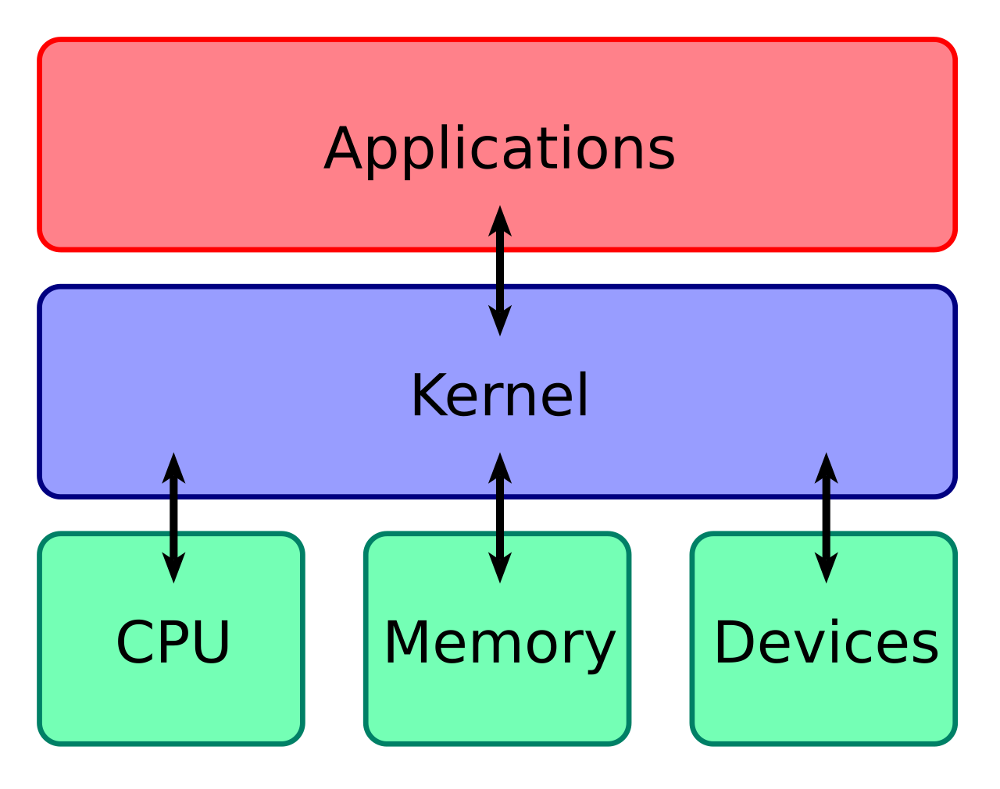
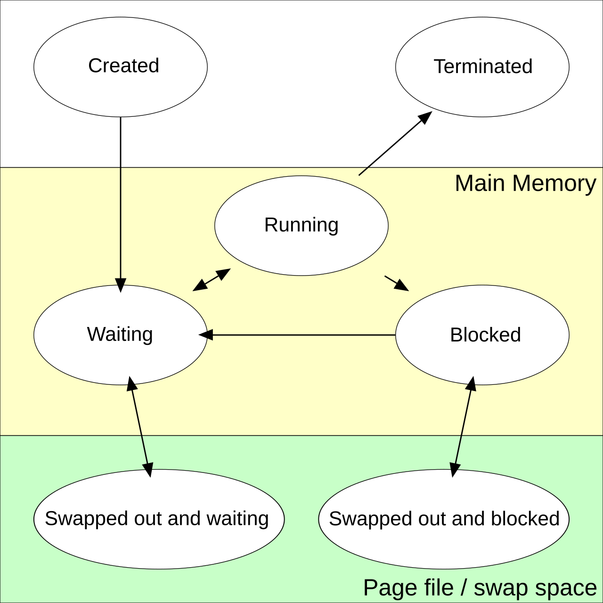
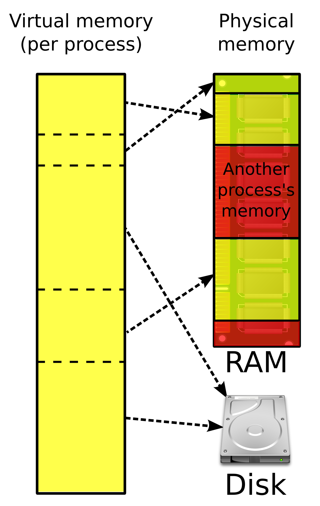

Foundations: Linux and Operating Systems for ML Engineers
Prerequisites
- The toolkit - opening a terminal, Python virtual environments (venv/conda/uv), git, and the JSON/YAML/TOML config formats. This chapter's section 2 then goes deeper on the shell itself.
- Computer Architecture - memory, pages, NUMA, DMA and pinned memory, and what a CPU does are used throughout.
Forward links (later chapters that teach things this one only uses by name): Concurrency (threads, the DataLoader), Networking (sockets, ports, how torchrun and NCCL connect), Containers (Docker in depth), Storage and Data (network filesystems), GPU software stack (drivers, CUDA, NCCL), Slurm from zero and Kubernetes from zero.
You know backprop, you know what loss.backward() does, and you can write a training loop in your sleep. But the first time you ssh into a GPU cluster you meet a different world: your job dies with exit code 137, a checkpoint you "saved" is zero bytes after a node crash, the DataLoader eats 200GB of RAM, nvidia-smi says CUDA 12.4 while torch says 12.1, and SLURM "sent SIGUSR1" to something. None of this is ML. It is the operating system.
This chapter starts from zero and builds up exactly the Linux and OS knowledge needed to work productively on a GPU cluster and to read the rest of this book, in particular the Debugging, SLURM and Storage chapters. The emphasis is on why things behave the way they do, because the "why" is what lets you debug a failure you have never seen before.
All commands assume a modern Ubuntu (22.04 or 24.04) server. Most work on any recent Linux distribution. Unless a block says otherwise, output shown is sketched and trimmed; your numbers will differ.
Where a block is labelled, the label tells you how much to trust it:
- (real output, macOS): run while writing this chapter on an Apple Silicon Mac, Python 3.14.
- (real output, Linux container): run inside a Debian 13 container (
python:3.12-slim, kernel shared with Docker Desktop's Linux VM, aarch64, which is Linux's name for ARM64). A container is a packaged, isolated Linux environment; the glossary below says just enough, and section 6 explains how it works. That is real Linux, but it is a small VM, not a GPU server, and you are root inside it. - untested: needs a real Linux host, root, systemd (the program that starts and supervises background services on most Linux systems; section 8), SLURM or GPUs. The commands follow the documented interfaces but were not executed for this chapter.
Almost every Python file in this chapter is self-contained: save it and run it with python3 file.py. The exceptions are labelled: a few blocks are sketches with placeholder functions, and some scripts only work on Linux. Each section ends with a short Try this list. Doing even half of those exercises on a real machine teaches more than rereading the section.
Conventions used below:
- As in the toolkit, a line starting with
$is a command you type (without the$), and the lines after it are its output. Blocks with no$lines are lists of commands (or a file's contents). - A
#starts a comment, never a prompt. Commands that need root are written withsudoin front.
Cluster and GPU words used before their chapters. This chapter is about the OS, but its examples come from GPU clusters, so it names tools that later chapters teach properly. Just enough to follow along:
- Cluster, node, login node. A cluster is many machines (nodes) sharing storage and a network. You
sshinto a shared login node to edit code and submit work; the training runs on compute nodes, each typically with 8 GPUs. - SLURM (also written Slurm) is the job scheduler most GPU clusters use: you ask for resources ("2 nodes, 8 GPUs each, 24 hours") and it runs your script when they are free. A job is one such request.
sbatch job.slurmsubmits a batch script; lines in that script starting with#SBATCHare not comments to Slurm but resource requests (e.g.#SBATCH --nodes=2);srun cmdstartscmdonce per task (process) of the job, on the job's nodes;scancelcancels a job;slurmd/slurmstepdare Slurm's own daemons (background service programs) on each node;SLURM_*environment variables tell each task where it is (e.g.SLURM_PROCIDis the task's index). Taught in Slurm from zero. - Ranks and
torchrun. Distributed training runs one Python process per GPU; each process is a rank, numbered0 .. WORLD_SIZE-1(LOCAL_RANKis the number within one node).torchrunis PyTorch's launcher: it starts those processes and gives each itsRANK,LOCAL_RANK,WORLD_SIZE, plusMASTER_ADDR/MASTER_PORT(the host and TCP port where ranks meet to find each other, the rendezvous; a port is a number from 0 to 65535 that picks out one listening program on a machine). This chapter explains how torchrun spawns processes in section 4; how the ranks connect is in Networking, and why one stuck rank hangs all of them is in Concurrency. - NCCL ("nickel") is NVIDIA's library that moves data between GPUs for distributed training. Its main operation is the all-reduce: sum a tensor (e.g. the gradients) across all ranks and give every rank the result. A collective is any such operation that all ranks must call together, which is why one stuck rank hangs everyone; a barrier is the simplest collective ("wait until every rank gets here").
NCCL_*environment variables (e.g.NCCL_DEBUG=INFOfor verbose logs,NCCL_SOCKET_IFNAMEto choose a network interface) configure it. See Concurrency (the first proper definitions), Networking and GPU software stack. - CUDA is NVIDIA's GPU programming platform: a kernel driver, user-space libraries and a compiler. Section 7 untangles its "versions".
CUDA_VISIBLE_DEVICES=0,1restricts a process to GPUs 0 and 1. A GPU kernel is one function run on the GPU, not to be confused with the OS kernel below. - InfiniBand / RDMA. The fast network between GPU nodes; RDMA lets a network card read and write memory directly. See Networking.
- Docker / containers / Kubernetes. A container runs a program with its own packaged filesystem (OS libraries, Python, your code); Docker is the common tool for building and running them, and an image is the packaged filesystem it starts from. Kubernetes (k8s) is a system that runs containers across a cluster; its unit of work is a pod (one or more containers scheduled together). Section 6 shows what a container is made of; Docker is taught in Containers and Kubernetes in Kubernetes from zero.
- NFS, Lustre, GPFS are network filesystems: directories that look local but live on servers shared by the whole cluster. Explained in section 3 (Local vs network filesystems).
1. What an operating system actually does
The kernel and why it exists
A computer has CPUs, RAM, disks, network cards and GPUs. If every program talked to the hardware directly, then:
- any program could overwrite any other program's memory (or the disk's partition table),
- two programs writing to the same disk sector at once would corrupt it,
- one program in an infinite loop would freeze the whole machine.
The kernel sits between applications and the hardware:

(source)

The kernel is the one program that is allowed to touch the hardware directly. Everything else asks the kernel to do things on its behalf. The kernel provides four big abstractions, and almost every topic in this chapter is one of them:
| Abstraction | What you see | What it hides |
|---|---|---|
| Process | "my program is running" | sharing a few CPU cores between thousands of programs |
| Virtual memory | "my program has a big flat address space" | physical RAM, swap, other programs' memory |
| File | "a named sequence of bytes" | disks, network filesystems, devices, kernel state |
| Socket | "a pipe to another machine" | network cards, TCP/IP, retransmissions |
"Linux" strictly means the kernel. Ubuntu is a distribution: the Linux kernel plus a large set of user programs (bash, ls, apt, systemd, ...), most of them from the GNU project.
You can ask the kernel who it is, and talk to it almost directly, from Python. os.write is a thin wrapper around the write system call (explained two sections down), with none of print's buffering in between. Its first argument, 1, is a file descriptor, the number a program uses for an open file; 1 is always the program's standard output, i.e. the terminal unless redirected (both explained in section 2):
# kernel_hello.py
import os
n = os.write(1, b"hi from a raw write syscall\n") # fd 1 = stdout
print("kernel says it wrote", n, "bytes")
print("my pid:", os.getpid(), "parent pid:", os.getppid())
print("kernel:", os.uname().sysname, os.uname().release)
(real output, macOS)
hi from a raw write syscall
kernel says it wrote 28 bytes
my pid: 43707 parent pid: 43703
kernel: Darwin 24.6.0
On a Linux server the last line says something like kernel: Linux 6.8.0-45-generic. The PID (process ID) is the kernel's name for your running program; the parent PID is the shell that started it.
$ uname -r # kernel version
6.8.0-45-generic
$ cat /etc/os-release | head -2 # distribution version (a different thing)
PRETTY_NAME="Ubuntu 24.04.1 LTS"
NAME="Ubuntu"
User space vs kernel space
The CPU itself enforces the split. It runs in one of (at least) two privilege levels:
- Kernel mode (ring 0 on x86): can execute any instruction, touch any memory, talk to devices.
- User mode (ring 3): cannot touch hardware or other processes' memory. An attempt to do so traps into the kernel, which typically kills the program (that's what a
Segmentation faultis).
Your Python interpreter, PyTorch, NCCL and the CUDA user-space libraries all run in user mode. The NVIDIA kernel module (nvidia.ko), the filesystem code and the network stack run in kernel mode.
Why bother with two modes? Because protection has to be enforced by something the program can't switch off. If "don't touch other processes' memory" were just a library convention, one buggy C extension could ignore it. The CPU checks the privilege level on every memory access and privileged instruction, and the only way into kernel mode is through entry points the kernel itself set up.
The kernel keeps separate CPU-time accounts for the two modes, and you can watch them. user time is your code running; sys time is the kernel working on your behalf:
# user_vs_sys.py
import os, time
def burn_user(n=3_000_000): # pure computation: never leaves user mode
s = 0
for i in range(n):
s += i * i
return s
def burn_sys(n=300_000): # each iteration is a syscall: user -> kernel -> user
fd = os.open("/dev/null", os.O_WRONLY) # /dev/null: a special file that discards whatever is written
for _ in range(n):
os.write(fd, b"x")
os.close(fd)
for name, fn in [("compute loop", burn_user), ("syscall loop", burn_sys)]:
t0, w0 = os.times(), time.perf_counter()
fn()
t1, w1 = os.times(), time.perf_counter()
print(f"{name:13s} wall={w1-w0:5.2f}s user={t1.user-t0.user:5.2f}s sys={t1.system-t0.system:5.2f}s")
(real output, Linux container)
compute loop wall= 0.11s user= 0.10s sys= 0.01s
syscall loop wall= 0.06s user= 0.03s sys= 0.04s
300,000 syscalls cost about 0.04s of kernel time here, roughly 130ns each. That is cheap one at a time, and adds up when a data pipeline does millions of tiny reads. time python train.py in bash prints the same three numbers (real, user, sys). A training job with high sys time is usually doing too many small I/O operations or spending its time in page faults.
System calls: the only door
Since user programs can't touch hardware, how does print("hi") reach your terminal? Through a system call (syscall): a special instruction that switches the CPU into kernel mode at a fixed kernel entry point, with arguments in registers. The kernel checks permissions, does the work, and returns a result.
There are a few hundred syscalls. The ones you will see constantly:
| Syscall | Purpose |
|---|---|
openat, read, write, close |
file I/O |
mmap, munmap, brk |
ask for memory |
clone, execve, wait4, exit_group |
create/replace/reap/end processes |
kill |
send a signal |
ioctl |
"device-specific command" - how CUDA talks to the NVIDIA driver |
futex |
the building block for locks; a hung process is often sitting in futex |
fsync |
force data to stable storage |
You can watch every syscall a program makes with strace. Install it with sudo apt install strace. Below, -f also traces child processes, -e trace=openat,write shows only those two syscalls, and 2>&1 is needed because strace prints its trace to the error stream:
$ strace -f -e trace=openat,write python -c 'print("hi")' 2>&1 | tail -5
openat(AT_FDCWD, "/usr/lib/python3.12/encodings/__pycache__/__init__.cpython-312.pyc", O_RDONLY|O_CLOEXEC) = 3
...
write(1, "hi\n", 3hi
) = 3
+++ exited with 0 +++
Read that last line: write(1, "hi\n", 3) = 3 means "write 3 bytes to file descriptor 1 (stdout)", and the kernel returned 3 (bytes written). Everything Python does - however many layers of abstraction - ends up as calls like this.
A summary is often more useful than the full trace:
$ strace -c -f python -c 'import torch' 2>&1 | head -15
% time seconds usecs/call calls errors syscall
------ ----------- ----------- --------- --------- ----------------
30.12 0.041000 4 9100 7900 newfstatat
21.55 0.029330 5 5400 4300 openat
...
The thousands of failed openat/newfstatat calls are Python searching sys.path for modules. On a network filesystem each one is a round-trip to a metadata server - which is why import torch can take 30+ seconds on a busy shared filesystem but 2 seconds on a local disk. (The exact counts vary a lot by environment; the pattern doesn't.)
For comparison, here is the same measurement for the much smaller import json:
$ strace -c python -c "import json" 2>&1 | head -8
% time seconds usecs/call calls errors syscall
------ ----------- ----------- --------- --------- ----------------
28.88 0.002530 32 79 26 openat
21.24 0.001860 11 157 23 newfstatat
11.17 0.000978 21 46 read
6.25 0.000547 8 66 rt_sigaction
5.80 0.000508 9 53 close
(real output, Linux container, Python 3.12, local overlay filesystem.) Even here a third of the openat calls fail: that's the module search at work.
Key takeaway: when something is slow or stuck and Python gives you no clue, the syscall layer usually does. We'll come back to strace in the debugging section.
Try this
- Run
user_vs_sys.pyabove. Changeburn_systo write 64KiB per call instead of 1 byte and keep the total bytes the same. What happens tosystime, and why? (Hint: the cost is per call, not per byte, until the bytes get large.) - On a Linux box, run
strace -c -f python -c 'import torch'once from a local disk venv and once from a venv on NFS or Lustre. Compare thesecondscolumn foropenatandnewfstatat. - Run
strace -e trace=write python -c 'print("a"); print("b")'twice: once with the output going to the terminal and once with| cat. Count thewritecalls each time. You have just seen line buffering versus block buffering (covered in the pipes section). - Read
man 2 syscalls(the2picks section 2 of the manual, system calls) and find three syscalls you've never heard of. Look one up inman 2 <name>.
2. The shell
What a shell is
The shell (bash on most servers, zsh on macOS) is just a user program that reads a line, splits it into words, and asks the kernel to run the named program with those words as arguments. It is also a programming language. When you ssh into a node, you are talking to a shell.
$ echo $SHELL
/bin/bash
$ which python
/home/me/miniconda3/envs/train/bin/python
Anatomy of a command
$ ls -lh /data/checkpoints
# ^ ^ ^
# | | argument
# | option (flags), -l long format, -h human-readable sizes
# program, found by searching $PATH
Help is always nearby: man ls, ls --help, or tldr ls (if installed, gives examples).
Core navigation and file commands
pwd # where am I?
cd /scratch/$USER # go somewhere (/scratch: a cluster's big shared work area); `cd` alone goes home, `cd -` goes back
ls -la # list including hidden (dot) files
ls -lhtr # sorted by time, newest last - great for "which checkpoint is latest"
mkdir -p runs/exp1/logs # -p: create parents, no error if exists
cp -r src/ dst/ # copy directory
mv old new # rename/move (instant on the same filesystem)
rm -r dir # delete - there is no trash can. Ever.
cat file; less file # print; page through (q to quit, / to search)
head -n 20 file; tail -n 20 file
tail -f train.log # follow a log as it grows - you'll use this daily
Finding things
# all checkpoints older than 7 days
find /scratch/$USER -name "*.pt" -mtime +7
# files bigger than 10GB; -exec runs ls -lh on them, with {} replaced by the found names
find . -type f -size +10G -exec ls -lh {} +
# where is libcudart on this system? (2>/dev/null throws away the "Permission denied" errors)
find / -name "libcudart.so*" 2>/dev/null
grep searches inside files:
grep -n "loss" train.log | tail # -n line numbers
grep -ri "nccl" logs/ # -r recursive, -i case-insensitive
grep -E "error|Traceback" *.out # -E extended regex: alternation
grep -v "INFO" train.log # -v invert: lines NOT matching
If available, rg (ripgrep) is a much faster grep -r.
Just enough awk and sed
awk splits each line into whitespace-separated fields $1, $2, .... Its program, in single quotes, is { ... } run on every line, optionally followed by END { ... } run once after the last line; variables like s and n start at 0. sed edits streams of text: s/old/new/ substitutes the first match on each line, -i edits the file in place (on macOS write sed -i ''), and -n '100,120p' prints only those lines. You need maybe five idioms:
# log line: "step 1200 loss 2.314 lr 3e-4"
grep "^step" train.log | awk '{print $2, $4}' # print step and loss
grep "^step" train.log | awk '{s+=$4; n++} END {print s/n}' # mean loss
nvidia-smi --query-gpu=memory.used --format=csv,noheader,nounits | awk '{s+=$1} END {print s " MiB"}'
sed -i 's/lr: 3e-4/lr: 1e-4/' config.yaml # in-place replace (in a YAML config file)
sed -n '100,120p' train.log # print lines 100-120
Disk usage: du and df
$ df -h /scratch # how full is the filesystem?
Filesystem Size Used Avail Use% Mounted on
10.0.0.5@tcp:/scratch 2.0P 1.7P 300T 85% /scratch
$ du -sh /scratch/$USER/* | sort -h | tail # what's using my space? (sort -h understands sizes like 120G)
120G /scratch/me/datasets
1.4T /scratch/me/checkpoints
$ df -i /home # inodes (one per file; see section 3) - you can run out of these with free space left!
du walks every file, so on a network filesystem with millions of files it can take hours and hammer the metadata server. Many clusters provide a quota tool instead (lfs quota on Lustre, or a site-specific command) - prefer that.
Pipes and redirection
Every process starts with three open file descriptors (more on these later):
| fd | name | default |
|---|---|---|
| 0 | stdin | keyboard |
| 1 | stdout | terminal |
| 2 | stderr | terminal |
Python's print goes to stdout; tracebacks and logging (by default) go to stderr. That distinction matters as soon as you redirect:
python train.py > out.log # stdout to file; errors still on screen
python train.py 2> err.log # only stderr to file
python train.py > all.log 2>&1 # both to file. Order matters!
python train.py 2>&1 > all.log # WRONG: stderr goes to the old stdout (screen)
python train.py &> all.log # bash shorthand for "both"
python train.py 2>&1 | tee all.log # both to file AND screen
python train.py >> all.log 2>&1 # append instead of overwrite
Why does order matter? 2>&1 means "make fd 2 point wherever fd 1 points right now". Redirections are processed left to right.
A pipe a | b connects a's stdout to b's stdin. Both run concurrently; the kernel buffers between them (64KiB by default on Linux). This is how you compose small tools:
ps aux | grep python | grep -v grep | wc -l # count python processes (ps aux lists every process; section 4)
A common surprise: when stdout is a pipe or file instead of a terminal, Python buffers its output in blocks instead of lines, so tail -f shows nothing for minutes. The block size depends on the Python version and the platform (it is derived from io.DEFAULT_BUFFER_SIZE, which went from 8KiB in 3.12 to 128KiB in 3.14, and from the file's reported block size). I measured it on macOS by writing N bytes into a pipe and checking what the reader saw before the writer exited. Python 3.12 still held 9,000 bytes back. Python 3.14 still held 100,000. A slow training loop that logs one short line per step can sit on minutes of output. Fix with python -u or PYTHONUNBUFFERED=1, or print(..., flush=True).
The measurement, so you can check your own Python:
# pipe_buffering.py: how much does a child Python hold back when stdout is a pipe?
import subprocess, sys, time, os
for n in [4000, 9000, 100_000, 140_000]:
p = subprocess.Popen([sys.executable, "-c", f"import time,sys; sys.stdout.write('x'*{n}); time.sleep(1)"],
stdout=subprocess.PIPE)
time.sleep(0.5) # child has written but not exited
os.set_blocking(p.stdout.fileno(), False)
try: got = os.read(p.stdout.fileno(), 1 << 20)
except BlockingIOError: got = b"" # nothing in the pipe yet
p.kill(); p.wait()
print(f"wrote {n:6d} bytes -> reader saw {len(got):6d} before the writer exited")
(real output, macOS, Python 3.14)
wrote 4000 bytes -> reader saw 0 before the writer exited
wrote 9000 bytes -> reader saw 0 before the writer exited
wrote 100000 bytes -> reader saw 0 before the writer exited
wrote 140000 bytes -> reader saw 65536 before the writer exited
The 65536 in the last line is the pipe's capacity: Python flushed its 128KiB buffer, the kernel pipe filled at 64KiB, and the writer blocked until the reader drained it.
Exit codes
Every process exits with an integer 0-255. 0 means success; anything else is failure. The shell stores the last one in $?:
$ python -c 'import sys; sys.exit(3)'; echo $?
3
$ python -c 'raise ValueError'; echo $?
...
ValueError
1
When a process is killed by a signal (a small numbered notification the kernel delivers to a process, such as "interrupt" for Ctrl-C or "kill"; section 4 covers them, and the other causes in this table), the shell reports 128 + signal number. Memorize these - they show up in SLURM and Kubernetes job reports:
| Exit code | Meaning | Typical ML cause |
|---|---|---|
| 0 | success | |
| 1 | generic error | Python exception |
| 2 | misuse / bad args | argparse error |
| 127 | command not found | wrong PATH, env not activated |
| 130 | 128+2, SIGINT | you pressed Ctrl-C |
| 134 | 128+6, SIGABRT | C++ abort(), failed assertion in a CUDA lib |
| 135 | 128+7, SIGBUS | /dev/shm full (DataLoader), truncated mmapped file |
| 137 | 128+9, SIGKILL | OOM killer, or scancel/timeout after grace period |
| 139 | 128+11, SIGSEGV | segfault in a C extension |
| 143 | 128+15, SIGTERM | polite kill: SLURM time limit, preemption, docker stop |
&& and || use exit codes: make && ./run runs ./run only if make succeeded.
In a pipeline, $? is the exit code of the last command, so python train.py | tee log "succeeds" even when training crashes. Use set -o pipefail (below) or ${PIPESTATUS[0]}.
Environment variables and PATH
Every process has an environment: a list of KEY=value strings inherited from its parent. This is how configuration flows from your shell into SLURM into torchrun into each training worker.
$ export CUDA_VISIBLE_DEVICES=0,1 # set and export to children
$ python -c 'import os; print(os.environ["CUDA_VISIBLE_DEVICES"])'
0,1
$ CUDA_VISIBLE_DEVICES=3 python train.py # set for one command only
$ env | grep -i nccl # list matching variables
$ unset CUDA_VISIBLE_DEVICES
A variable set without export is a shell-local variable and is not seen by child processes - a very common "but I set it!" bug.
PATH is a colon-separated list of directories the shell searches for programs:
$ echo $PATH
/home/me/miniconda3/envs/train/bin:/usr/local/cuda/bin:/usr/bin:/bin
$ which -a python # every python on PATH, first one wins
$ type python # also reveals aliases and shell functions
"Activating" a conda or venv environment is mostly just prepending its bin/ to PATH. If python runs the wrong interpreter, check which python first.
Environment variables you'll meet constantly in ML: CUDA_VISIBLE_DEVICES, NCCL_DEBUG, NCCL_SOCKET_IFNAME, MASTER_ADDR, MASTER_PORT, RANK, LOCAL_RANK, WORLD_SIZE, HF_HOME, OMP_NUM_THREADS, PYTHONPATH, LD_LIBRARY_PATH, and the whole SLURM_* family.
Shell startup files: interactive login shells read ~/.bash_profile (or ~/.profile), interactive non-login shells read ~/.bashrc. On Ubuntu the default ~/.profile sources ~/.bashrc (runs it inside the same shell, the way source .venv/bin/activate does). Put your exports and aliases (short names for longer commands, e.g. alias ll='ls -l') in ~/.bashrc. Note that SLURM batch scripts are non-interactive and, depending on how they're invoked, may not read ~/.bashrc - don't rely on it for anything a job needs; set it in the job script.
Quoting: the source of many bugs
The shell splits on whitespace and expands $var, *, ~ before the program sees the arguments.
name="my run"
mkdir $name # creates TWO dirs: "my" and "run"
mkdir "$name" # creates one dir "my run"
echo '$HOME' # single quotes: literal, prints $HOME
echo "$HOME" # double quotes: expands, no word splitting
rm -rf $DIR/ # (-f: never ask) if DIR is unset/empty, this is `rm -rf /`. Quote and guard:
rm -rf "${DIR:?DIR is unset}/" # ${VAR:?msg} aborts with msg if VAR is unset or empty
Rule: always double-quote variable expansions unless you specifically want splitting.
The most ML-relevant quoting trap is when expansion happens. In a SLURM script (srun runs the quoted command once per task of the job, possibly on other nodes, and Slurm gives each task its own SLURM_PROCID; bash -c "..." starts a new shell that runs the quoted text as a command; a backslash before $ stops the current shell from expanding it):
srun bash -c "python train.py --rank $SLURM_PROCID" # expanded NOW, on the batch node -> same value everywhere
srun bash -c "python train.py --rank \$SLURM_PROCID" # escaped -> expanded by each task -> correct
The book discusses this in SLURM_PROCID early interpolation.
Scripting essentials
A minimal robust bash script:
#!/bin/bash
set -euo pipefail # -e: exit on error, -u: error on unset var, pipefail: pipeline fails if any stage fails
OUT_DIR=${OUT_DIR:-/scratch/$USER/run1} # default value if unset
mkdir -p "$OUT_DIR"
for seed in 1 2 3; do
echo "seed=$seed"
python train.py --seed "$seed" --out "$OUT_DIR/seed$seed" 2>&1 | tee "$OUT_DIR/seed$seed.log"
done
N_GPUS=$(nvidia-smi -L | wc -l) # command substitution
echo "found $N_GPUS GPUs; half is $((N_GPUS / 2))" # arithmetic
if [[ -f "$OUT_DIR/done" ]]; then # [[ -f path ]]: true if the file exists
echo "already finished"
fi
cleanup() { echo "cleaning up"; }
trap cleanup EXIT # run on any exit
Make it executable with chmod +x run.sh, run with ./run.sh. The #! line ("shebang") tells the kernel which interpreter to use.
Debugging scripts: bash -x run.sh prints each command after expansion - invaluable for quoting bugs.
Working remotely: ssh, scp, rsync
ssh (secure shell) gives you an encrypted shell on a remote machine. On first connect it shows you the server's host key fingerprint and stores it in ~/.ssh/known_hosts. If that key ever changes, ssh refuses to connect with a loud REMOTE HOST IDENTIFICATION HAS CHANGED warning. On clusters that usually means the node was reinstalled, not that someone is attacking you. Ask the admins, then delete the stale line with ssh-keygen -R hostname.
ssh me@login.cluster.org
ssh-keygen -t ed25519 # once, on your laptop
ssh-copy-id me@login.cluster.org # install your public key, no more passwords
Key pairs. ssh-keygen creates two files. The private key (id_ed25519) never leaves your laptop. The public key (id_ed25519.pub) goes into ~/.ssh/authorized_keys on every server you want to log into. The server proves you hold the private key by having you sign a challenge, so no secret ever crosses the network:
$ ssh-keygen -q -t ed25519 -N '' -C me@laptop -f k # -N '' = no passphrase (demo only!)
$ ls -l k k.pub
-rw------- 1 me staff 399 Nov 5 16:17 k
-rw-r--r-- 1 me staff 91 Nov 5 16:17 k.pub
$ cut -c1-40 k.pub # first 40 characters of each line
ssh-ed25519 AAAAC3NzaC1lZDI1NTE5AAAAIL1n
$ ssh-keygen -lf k.pub # fingerprint, to compare with what admins see
256 SHA256:2orcwx7lG5ari1U5saV32F20IZL11Cs3mQX8+uINr74 me@laptop (ED25519)
(real output, macOS; username changed.) Note the permissions: ssh-keygen made the private key 600 (-rw-------: only you can read or write it; the three-digit form is explained in Permissions). sshd, the ssh server program, is strict about this. If ~/.ssh on the server is group-writable, or authorized_keys is writable by anyone but you, sshd silently ignores your key and falls back to asking for a password. Fix with chmod 700 ~/.ssh; chmod 600 ~/.ssh/authorized_keys. This is the number one cause of "I copied my key but it still asks for a password". A shared cluster with umask 002 (see the permissions section) creates exactly this situation.
Use a passphrase on real keys and let ssh-agent remember the decrypted key for the session, so you type the passphrase once: ssh-add ~/.ssh/id_ed25519, then ssh-add -l to list loaded keys. On macOS, AddKeysToAgent yes plus UseKeychain yes in the config does this automatically.
~/.ssh/config saves typing and handles jump hosts (compute nodes are often reachable only via a login node):
# ~/.ssh/config (chmod 600)
Host *
ServerAliveInterval 60 # send a keepalive every 60s...
ServerAliveCountMax 3 # ...and give up after 3 missed: no more frozen terminals
ControlMaster auto # first connection becomes a "master"...
ControlPath ~/.ssh/cm-%r@%h:%p
ControlPersist 10m # ...later ones reuse it for 10 minutes: no re-auth, instant
AddKeysToAgent yes
Host cluster
HostName login.cluster.org
User me
IdentityFile ~/.ssh/id_ed25519
IdentitiesOnly yes # offer only this key (servers cut you off after ~6 failed keys)
Host gpu-*
ProxyJump cluster # tunnel through the login node
User me
Now ssh cluster and ssh gpu-017 just work. ProxyJump opens an ssh connection to cluster and tunnels the second ssh connection through it, end to end encrypted, so your private key stays on your laptop. For each option, the first value ssh finds wins. That's why Host * defaults usually go at the bottom of real configs. Here it sits at the top, which is fine only because no later block sets the same options; a later block could not override them. ControlMaster matters on clusters with 2FA: you approve once and every later ssh/scp/rsync in the next 10 minutes reuses the authenticated connection.
ssh -G host prints the configuration ssh would actually use for a host, without connecting. It's the way to debug a config:
$ ssh -F ssh_config -G gpu-017 | grep -E '^(hostname|user|proxyjump|controlpersist|serveraliveinterval|forwardagent) '
user me
hostname gpu-017
serveraliveinterval 60
forwardagent no
controlpersist 600
proxyjump cluster
(real output, macOS, with the config above saved as ssh_config.)
Agent forwarding caveat. ssh -A / ForwardAgent yes lets the remote machine use your laptop's agent, for example to git clone from GitHub on the cluster with your laptop key. But anyone with root on that remote machine (or who can become your user there) can use your agent socket to log in as you anywhere your key works, for as long as you're connected. On a shared login node you don't control, that is a real risk. Prefer ProxyJump for hopping between hosts. For git on the cluster, use a separate deploy key or an HTTPS token that can only touch the one repo.
Port forwarding, e.g. to view TensorBoard (a web dashboard of training curves, served on port 6006) running on a compute node in your laptop's browser:
ssh -L 6006:localhost:6006 gpu-017 # localhost = "this machine"; then open http://localhost:6006 on your laptop
Copying files:
scp model.pt cluster:/scratch/me/ # simple copy
rsync -avP ./code/ cluster:/home/me/code/ # incremental, resumable, shows progress
rsync -avP --exclude '*.pt' --exclude '.git' ./ cluster:proj/
rsync only transfers what changed and can resume interrupted transfers; prefer it for anything large. The trailing slash on the source matters: src/ copies the contents of src, src copies the directory itself.
tmux: don't lose work when your laptop sleeps
When your ssh connection drops, the shell on the server receives SIGHUP ("hang up") and, by default, it and the programs it started die. A terminal multiplexer keeps a session alive on the server, independent of your connection.
tmux new -s train # start a named session
# ... run things ...
# detach: Ctrl-b then d
tmux ls # list sessions
tmux attach -t train # reattach later, even from a different laptop
Inside tmux: Ctrl-b c new window, Ctrl-b n/p next/previous, Ctrl-b % and Ctrl-b " split panes, Ctrl-b [ scroll mode (q to exit). screen is the older equivalent (screen -S train, detach Ctrl-a d, screen -r train).
Caveats on clusters: tmux on a login node survives your disconnect, but login nodes are shared and sometimes reboot; for real training use the scheduler (sbatch), and use tmux for interactive sessions and monitoring. Some sites kill user processes on login nodes after a while. nohup cmd & is the poor man's alternative: it ignores SIGHUP and writes output to nohup.out.
Job control: &, jobs, fg, bg, Ctrl-Z
The shell can run several programs from one terminal. A trailing & starts a command in the background: the shell gives you the prompt back immediately. Ctrl-Z suspends the foreground program (sends it SIGTSTP); bg resumes it in the background and fg brings it back to the foreground.
$ python train.py > train.log 2>&1 & # background; output must go somewhere
[1] 52114 # job number 1, PID 52114
$ jobs
[1]+ Running python train.py > train.log 2>&1 &
$ tail -f train.log # watch it; Ctrl-C stops tail, not training
^C
$ fg %1 # bring it back; now Ctrl-C would stop training
^Z
[1]+ Stopped python train.py > train.log 2>&1
$ bg %1 # resume, in the background
$ kill %1 # SIGTERM by job number
$ echo $! # PID of the most recent background job
52114
Two traps. A background job still belongs to your terminal session, so closing ssh sends it SIGHUP and it dies. disown %1 or nohup detaches it, and tmux avoids the problem entirely. And a stopped (Ctrl-Z) process holds all its memory and GPU memory while doing nothing. "Why is GPU 0 full when nothing is running?" is sometimes a forgotten Ctrl-Z in another terminal (state T in ps).
Try this
- Write
run.shfrom the scripting section with a deliberate typo in a variable name. Run it with and withoutset -u, and withbash -x. - Run
python -c 'import sys; print("out"); print("err", file=sys.stderr)'with each redirection in the pipes table and predict, before running, what lands in the file. python -c 'import sys; sys.exit(7)' | tee /dev/null; echo $?prints 0. Make it print 7 two ways: withset -o pipefail, and with${PIPESTATUS[0]}.- Run
pipe_buffering.pywithpython3 -u(unbuffered) as the child interpreter and see every row change. - Write a
~/.ssh/configentry for a machine you actually use and check it withssh -G <host>. AddControlMaster, connect twice, and time the second connection (time ssh host true). - Start
sleep 300 &, then find it three ways:jobs,pgrep sleep, andps -o pid,stat,cmd -p $!.
3. Files and filesystems
Everything is a file
Unix's central design idea: many things are accessed through the same open/read/write/close interface.
- Regular files and directories
- Devices:
/dev/nvidia0(a GPU),/dev/nvme0n1(an NVMe disk),/dev/null(discards everything) - Pipes and sockets
- Kernel state:
/proc/meminfo,/sys/class/net/
That's why cat /proc/cpuinfo works, and why fuser -v /dev/nvidia* can tell you which processes have a GPU open.
Why design it this way? One small interface means every tool composes with every other tool. cat, grep, tail -f and dd (a raw byte-copying tool) work on devices, pipes and kernel state without knowing they're not ordinary files. The program holds an integer file descriptor and calls read/write; the kernel routes each call to the right driver. Python sees the same thing:
# everything_is_a_file.py
import os, socket, stat
def kind(fd):
m = os.fstat(fd).st_mode
for name, test in [("regular file", stat.S_ISREG), ("directory", stat.S_ISDIR),
("char device", stat.S_ISCHR), ("pipe", stat.S_ISFIFO),
("socket", stat.S_ISSOCK)]:
if test(m):
return name
return "other"
f = open(__file__, "rb")
devnull = os.open("/dev/null", os.O_WRONLY)
rnd = os.open("/dev/urandom", os.O_RDONLY)
r, w = os.pipe()
s = socket.socket()
for label, fd in [("this script", f.fileno()), ("/dev/null", devnull),
("/dev/urandom", rnd), ("pipe read end", r), ("TCP socket", s.fileno())]:
print(f"fd {fd:2d} {label:14s} -> {kind(fd)}")
# Same read() call on very different things:
print(os.read(rnd, 8).hex(), "<- 8 bytes read from a device")
os.write(w, b"through the kernel")
print(os.read(r, 100), "<- read from a pipe")
(real output, macOS; identical on the Linux container except the random bytes)
fd 3 this script -> regular file
fd 4 /dev/null -> char device
fd 5 /dev/urandom -> char device
fd 6 pipe read end -> pipe
fd 8 TCP socket -> socket
875a014ef288e6b7 <- 8 bytes read from a device
b'through the kernel' <- read from a pipe
The numbers start at 3 because 0, 1 and 2 are already stdin, stdout and stderr. (fd 7 is the pipe's write end.) On Linux you can list a process's descriptors as symlinks (small files that point at another path, shown as name -> target; Inodes, names and links below):
$ ls -l /proc/self/fd
lrwx------ 1 root root 64 Nov 5 21:14 0 -> /dev/null
l-wx------ 1 root root 64 Nov 5 21:14 1 -> pipe:[12463]
l-wx------ 1 root root 64 Nov 5 21:14 2 -> pipe:[12464]
lr-x------ 1 root root 64 Nov 5 21:14 3 -> /proc/9/fd
(real output, Linux container.)
Inodes, names and links
A file on disk is really two things:
- An inode: metadata (size, owner, permissions, timestamps, where the data blocks are) - but not the name.
- Directory entries: names that point to an inode. A directory is just a table of
name -> inode number.
$ stat model.pt
File: model.pt
Size: 497764122 Blocks: 972200 IO Block: 4096 regular file
Device: 259,2 Inode: 1835123 Links: 1
Access: (0644/-rw-r--r--) Uid: ( 1000/ me) Gid: ( 1000/ me)
Modify: 2025-03-01 12:00:00.000000000 +0000
Consequences that matter:
- Filesystems have a fixed or limited number of inodes (or, on Lustre-like systems, metadata capacity). A dataset of 50 million small JPEGs can exhaust inodes while
df -hsays 40% free - checkdf -i. This is one reason large-scale training data is packed into shards (WebDataset tar files, Arrow, Parquet, etc.). mvwithin the same filesystem is instant: it only rewrites a directory entry. Across filesystems it's a full copy plus delete. And arenamewithin one filesystem is atomic - the foundation of safe checkpoint writing (see fsync below).- Deleting a file that's still open doesn't free the space. The inode lives until the last name and the last open file descriptor are gone. If
dfsays full butducan't find the files, a process is holding deleted files open:lsof +L1lists them (lsoflists open files;+L1restricts it to files with no name left).
Links:
ln target hardlink # second name for the same inode (same filesystem only)
ln -s target symlink # a tiny file containing a path; can dangle, can cross filesystems
ls -l symlink
lrwxrwxrwx 1 me me 6 ... symlink -> target
The HuggingFace Hub cache uses symlinks heavily: snapshots/<rev>/model.safetensors -> ../../blobs/<sha>.
Permissions, ownership, umask
$ ls -l train.py
-rwxr-x--- 1 alice mlteam 2048 Mar 1 12:00 train.py
# ^ type (- file, d dir, l link)
# ^^^ owner (alice): read, write, execute
# ^^^ group (mlteam): read, execute
# ^^^ others: nothing
Numeric (octal) form: r=4, w=2, x=1, so rwxr-x--- = 750.
chmod 640 secrets.env # owner rw, group r, others none
chmod -R g+rwX shared/ # add group rw recursively; X = execute only on dirs (and already-executable files)
chown alice:mlteam file # change owner (needs root) / group (must be a member)
id # my uid, gid and groups
For directories, x means "may enter / traverse" and r means "may list". You need x on every directory in a path to reach a file.
umask decides default permissions of new files. Files start from 666, directories from 777, and the umask bits are removed:
$ umask
0022 # new files 644 (rw-r--r--), dirs 755
$ umask 002 # new files 664, dirs 775 - group-writable
Shared team directories: set umask 002 in ~/.bashrc and set the setgid bit on the shared directory (chmod g+s /data/team) so that new files inherit the directory's group rather than your personal group. Forgetting this is the classic "my teammate can't overwrite the checkpoint I wrote" problem.
Network filesystems may have their own ACL (access control list, explained just below) or ID-mapping rules; ls -l may not tell the whole story there (getfacl shows POSIX ACLs, POSIX being the Unix standard that Linux follows).
Permissions on shared clusters: groups, setgid, ACLs, sticky bit, quotas
On your laptop you're the only user, so permissions rarely bite. On a cluster, hundreds of people share /scratch, and a team shares project directories. Five mechanisms do the work:
- Groups. A group is a named set of users. A file has exactly one owning group, and the middle
rwxtriple applies to its members.idlists your groups. Admins add you to a group, and the change only shows up in new login sessions. Log out and back in, or runnewgrp mlteamfor one shell. - umask. The bits removed from new files' permissions.
022(the usual default) means teammates can read but not overwrite your files. - setgid on directories (
chmod g+s, thesindrwxrwsr-x). New files and subdirectories inherit the directory's group instead of your primary group, and new subdirectories inherit the setgid bit too. - ACLs (access control lists). Per-user or per-group permission entries beyond the single owner/group/other triple. A default ACL on a directory is inherited by everything created inside it, and it overrides umask for those entries.
- The sticky bit (
tindrwxrwxrwt, as on/tmp). Everyone can create files in the directory, but only a file's owner can delete or rename it.
Here is the whole story in one script: two teammates and an outsider, run as root in a Linux container. The admin commands in it: groupadd NAME creates a group; useradd -m -G GROUP NAME creates a user (with a home directory) who is a member of GROUP; chgrp GROUP PATH changes a file's group; su USER -c 'cmd' runs cmd as that user; setfacl -m u:carol:rx PATH adds an ACL entry giving user carol read and execute; getfacl prints a file's ACL:
groupadd mlteam; useradd -m -G mlteam alice; useradd -m -G mlteam bob; useradd -m carol
mkdir -p /data/team; chgrp mlteam /data/team; chmod 2775 /data/team # leading 2 = setgid
ls -ld /data/team
su alice -c 'umask 022; echo v1 > /data/team/ckpt_a.txt; mkdir /data/team/run_a'
su alice -c 'umask 002; echo v1 > /data/team/ckpt_b.txt'
ls -l /data/team
su bob -c 'echo v2 > /data/team/ckpt_a.txt'
su bob -c 'echo v2 > /data/team/ckpt_b.txt && echo "ckpt_b ok"'
setfacl -m u:carol:rx /data/team; setfacl -m u:carol:r /data/team/ckpt_b.txt # carol is not in mlteam
getfacl -p /data/team/ckpt_b.txt
su carol -c 'cat /data/team/ckpt_b.txt'
su alice -c 'touch /tmp/alice_file'; ls -ld /tmp
su carol -c 'rm -f /tmp/alice_file'
(real output, Linux container)
drwxrwsr-x 2 root mlteam 4096 Nov 5 21:17 /data/team
-rw-r--r-- 1 alice mlteam 3 Nov 5 21:17 ckpt_a.txt <- group mlteam thanks to setgid; umask 022: not group-writable
-rw-rw-r-- 1 alice mlteam 3 Nov 5 21:17 ckpt_b.txt <- umask 002: group-writable
drwxr-sr-x 2 alice mlteam 4096 Nov 5 21:17 run_a <- subdir inherited the setgid bit
sh: 1: cannot create /data/team/ckpt_a.txt: Permission denied
ckpt_b ok
# file: /data/team/ckpt_b.txt
# owner: alice
# group: mlteam
user::rw-
user:carol:r--
group::rw-
mask::rw-
other::r--
v2
drwxrwxrwt 1 root root 4096 Nov 5 21:17 /tmp
rm: cannot remove '/tmp/alice_file': Operation not permitted
(I added the <- annotations.) Relying on everyone's umask is fragile, because one teammate with 022 in their .bashrc breaks it. A default ACL makes the directory enforce group-write itself:
mkdir -p /data/team; chgrp mlteam /data/team; chmod 2770 /data/team
setfacl -d -m g::rwx /data/team # -d: default ACL, inherited by new entries
su alice -c 'umask 022; echo x > /data/team/f; mkdir /data/team/d'
ls -l /data/team
(real output, Linux container)
drwxrws---+ 2 alice mlteam 4096 Nov 5 21:17 d
-rw-rw---- 1 alice mlteam 2 Nov 5 21:17 f <- group-writable despite umask 022
The + after the permission string means "there's an ACL; run getfacl". Not every filesystem supports POSIX ACLs. NFSv4 has its own ACL model (nfs4_getfacl/nfs4_setfacl), and on Lustre, ACL support depends on how the filesystem was mounted. Ask your admins before building a workflow on them.
Quotas. Shared filesystems limit how many bytes, and often how many files (inodes), each user or group may use. Hitting a quota produces Disk quota exceeded (EDQUOT) in the middle of a checkpoint write. Commands vary by filesystem (untested, site-specific):
quota -s # classic quota (often /home on NFS)
lfs quota -hu $USER /scratch # Lustre, per user
lfs quota -hg mlteam /scratch # Lustre, per group
mmlsquota # IBM Spectrum Scale (GPFS)
Disk quotas for usr me (uid 1234):
Filesystem used quota limit grace files quota limit grace
/scratch 18.2T* 20T 22T 6d23h 4.1M 5M 6M -
A * and a grace period mean you're over the soft quota and have until the grace period expires to get back under. After that, or at the hard limit, writes fail. The file-count limit catches people who unpack datasets as millions of small files. Another reason to pack data into shards.
Mount points: one tree, many filesystems
Linux has a single directory tree rooted at /. Different storage devices and network filesystems are mounted onto directories in that tree.
$ df -hT
Filesystem Type Size Used Avail Use% Mounted on
/dev/nvme0n1p2 ext4 1.8T 200G 1.5T 12% /
/dev/md0 xfs 28T 3.1T 25T 11% /local_nvme
tmpfs tmpfs 1.0T 2.0G 1022G 1% /dev/shm
nfs01:/home nfs4 50T 41T 9.0T 82% /home
10.0.0.5@o2ib:/lus lustre 10P 7P 3P 70% /scratch
$ findmnt /scratch # which filesystem is this path on?
That Type column is the single most important thing to know about a path you're about to hammer with I/O. cd /scratch looks like cd /tmp, but one is a local disk with ~100µs latency and the other is a cluster of servers across the network.
/proc and /sys: the kernel as files
These are not on disk; the kernel generates their content on read.
cat /proc/cpuinfo | grep "model name" | head -1
cat /proc/meminfo | head -5 # MemTotal, MemFree, MemAvailable, Buffers, Cached
cat /proc/loadavg
nproc # CPUs available to *this process* (respects affinity/cgroups)
# per-process: /proc/<PID>/
cat /proc/$$/status | grep -E "VmRSS|Threads" # $$ = this shell's PID
tr '\0' '\n' < /proc/12345/environ # environment of process 12345 (yours only); entries are separated
# by zero bytes, and tr translates them to newlines
tr '\0' ' ' < /proc/12345/cmdline # its full command line
ls -l /proc/12345/fd # its open files
ls -l /proc/12345/cwd # its working directory
# /sys: devices and kernel tunables
ls /sys/class/net/ # network interfaces (useful for NCCL_SOCKET_IFNAME)
cat /sys/class/net/ib0/mtu # MTU: largest packet the interface sends
ls /sys/bus/pci/devices/ # PCI devices; GPUs live here
cat /sys/kernel/mm/transparent_hugepage/enabled
Kernel tunables are under /proc/sys/ and are managed with sysctl:
sysctl vm.overcommit_memory
sudo sysctl -w vm.swappiness=10
/dev/shm: RAM pretending to be a disk
/dev/shm is a tmpfs - a filesystem whose files live in RAM (page cache), not on any disk. By default its size limit is 50% of RAM. It's used for POSIX shared memory, and PyTorch DataLoader worker processes pass batches to the main process through shared memory.
Two consequences:
- Files you put in
/dev/shmconsume RAM and vanish on reboot. Great for a small hot dataset; dangerous if you forget it's there. - Docker gives containers only a 64MB
/dev/shmby default. DataLoader withnum_workers > 0then dies withBus error(SIGBUS, exit 135) orRuntimeError: DataLoader worker (pid X) is killed by signal: Bus error. Fix:docker run --shm-size=32g ...or--ipc=host(docker runstarts a container; these two flags give it a bigger/dev/shmor the host's own. Section 6 explains what a container is).
$ df -h /dev/shm
tmpfs 252G 1.2G 251G 1% /dev/shm
The page cache: why the second read is fast
The kernel uses otherwise-free RAM to cache file contents. When you read a file, its data is kept in the page cache; the next read of the same data is served from RAM.
$ time cat /local_nvme/shard-000.tar > /dev/null
real 0m4.210s # ~2.4GB/s, from disk
$ time cat /local_nvme/shard-000.tar > /dev/null
real 0m0.390s # from page cache
free -h shows it:
$ free -h
total used free shared buff/cache available
Mem: 2.0Ti 310Gi 20Gi 2.1Gi 1.7Ti 1.6Ti
Swap: 0B 0B 0B
Don't panic at free: 20Gi. The buff/cache RAM is reclaimable on demand; available is the number that tells you how much memory a new program can get.
Why you care:
- Benchmarks lie unless you account for it. Reading a dataset the second time measures RAM, not storage. To measure cold reads:
sync; echo 3 | sudo tee /proc/sys/vm/drop_caches(root only), or use files larger than RAM, or useO_DIRECT(e.g.fio --direct=1). See the Storage chapter for benchmarking withfio. - Epoch 1 slow, epoch 2+ fast is often the page cache, not a data-loading bug.
- Writes go to the cache first, which leads to the next topic.
Network filesystems also cache on the client, but with weaker and FS-specific consistency guarantees (e.g. NFS's "close-to-open" consistency: another node is only guaranteed to see your writes after you close() and it open()s).
fsync and durability: why checkpoints get lost
When write() returns, your data is in the page cache in RAM, not on disk. The kernel flushes dirty pages (cached pages that were modified but not yet written to disk) to storage in the background, typically within ~30 seconds (governed by vm.dirty_expire_centisecs and related settings). If the node loses power or the kernel panics before that, the data is gone - and the file may exist with the right name but be truncated or zero-filled.
fsync(fd) blocks until the file's data and metadata have reached stable storage (as far as the device honours it). close() does not imply fsync().
As far as I know, torch.save does not call fsync itself (verify for your version). The robust pattern for writing a checkpoint:
import os, torch
def atomic_save(obj, path):
tmp = path + ".tmp"
with open(tmp, "wb") as f:
torch.save(obj, f)
f.flush() # Python's buffer -> kernel
os.fsync(f.fileno()) # kernel -> disk
os.replace(tmp, path) # atomic rename: readers see old or new, never half
dfd = os.open(os.path.dirname(path) or ".", os.O_RDONLY)
os.fsync(dfd) # make the rename itself durable
os.close(dfd)
Why each step:
- Writing to
.tmpthen renaming means a crash mid-write leaves the previous checkpoint intact instead of a corrupt one. fsyncon the file makes the bytes durable;fsyncon the directory makes the new name durable.- Also write a "latest" marker or a final
donefile after everything else is synced, and have the resume logic trust only complete checkpoints.
On parallel/network filesystems (Lustre, GPFS, NFS, object-store FUSE mounts, i.e. cloud storage buckets such as S3 made to look like a directory) the semantics of fsync and rename vary; some FUSE mounts for object stores don't support atomic rename at all. Check your filesystem's documentation. Also note fsync on a multi-GB file can take seconds - that's the honest cost of durability, and it's why frequent checkpoint saving needs a fast filesystem.
Local vs network filesystems
| Local NVMe | NFS | Parallel FS (Lustre, GPFS, WekaFS, ...) | |
|---|---|---|---|
| Visible from | one node | all nodes | all nodes |
| Latency per op | ~10-100µs | ~0.5-few ms | ~0.1-few ms, metadata can be much slower under load |
| Small-file / metadata ops | great | poor | often the bottleneck |
| Big sequential throughput | a few GB/s per drive | limited | can be 100s of GB/s aggregate |
| Survives node loss | no | yes | yes |
Typical cluster layout: /home on NFS (small, backed up, slow), /scratch or /data on a parallel FS (big, fast, often not backed up, sometimes auto-purged), and a node-local NVMe at /tmp or /local (fast, wiped after the job). Put code on a shared FS, stream data from the parallel FS or stage it to local NVMe, and write checkpoints to the parallel FS. The Storage chapter covers this in depth.
Two habits that save a shared filesystem (and your colleagues' sanity): don't put conda environments with 100k small files on a slow NFS /home if you can avoid it, and never run find / du / ls -R over the whole parallel FS.
Why are network filesystems so much worse at small operations than at big reads? A big sequential read is one request followed by a stream of bytes, so the network's bandwidth dominates. A stat() or open() is a full round-trip to a metadata server, and that server also has to keep every client's cached view consistent. Thousands of ranks doing import torch at the same moment means millions of these round-trips against one or a few metadata servers. Measure the per-operation cost of a path instead of guessing:
# metadata_bench.py - usage: python metadata_bench.py /path/on/the/filesystem/to/test
import os, sys, time, tempfile, shutil
root = tempfile.mkdtemp(dir=sys.argv[1] if len(sys.argv) > 1 else None)
N = 2000
t0 = time.perf_counter()
for i in range(N):
with open(os.path.join(root, f"f{i}"), "wb") as f:
f.write(b"x" * 100)
t1 = time.perf_counter()
for i in range(N):
os.stat(os.path.join(root, f"f{i}"))
t2 = time.perf_counter()
for i in range(N): # what `import` does: probe for files that don't exist
try: os.stat(os.path.join(root, f"missing{i}"))
except FileNotFoundError: pass
t3 = time.perf_counter()
shutil.rmtree(root)
us = lambda dt: dt / N * 1e6
print(f"{root}: create {us(t1-t0):6.1f} us/file stat {us(t2-t1):5.1f} us failed stat {us(t3-t2):5.1f} us")
(real output, macOS, local APFS SSD)
/tmp/tmp87ckocsm: create 91.1 us/file stat 4.6 us failed stat 5.6 us
On a local disk, stat takes microseconds, served from the kernel's cache. Run the script on your cluster's /home and /scratch: if stat comes out at hundreds of microseconds, import torch (tens of thousands of stats) costs seconds per process, multiplied by every rank. That is why people put their Python environment in a container image or on node-local disk (see Storage and Data).
Try this
- Run
metadata_bench.pyon every filesystem you have access to (/tmp,/home,/scratch,/dev/shm) and fill in a table. Identify each one's type withdf -hT <path>. - Create a file, hard-link it, symlink it, then
rmthe original. Which of the two links still works? Checkstaton each for the inode number and link count. - Open a large file in Python (
f = open("big.bin")),rmit in another terminal, and watchdfbefore and after you closef. Find it withlsof +L1(Linux). - Write a checkpoint with
atomic_saveand kill the process withkill -9partway through a big save (use a large tensor). Confirm that only.tmpis broken and the old checkpoint is intact. - On a cluster, find your quota command and work out how many more files and bytes you can create.
4. Processes
What a process is
A process is a running instance of a program: its own virtual address space, one or more threads, a set of open file descriptors, an environment, a current directory, a user identity, and a PID (process ID). A thread is an execution context within a process; threads of one process share memory.
The states a process moves through:

(source)

$ ps -ef --forest | grep -A3 slurmstepd
root 4001 1 slurmstepd: [12345.0]
me 4010 4001 \_ /usr/bin/python -m torch.distributed.run --nproc-per-node 8 train.py
me 4033 4010 \_ /usr/bin/python -u train.py --local-rank=0
me 4034 4010 \_ /usr/bin/python -u train.py --local-rank=1
Columns: user, PID, PPID (parent PID), command. Other everyday views:
ps aux --sort=-%mem | head # biggest memory users
pgrep -af train.py # PIDs + command lines matching a pattern
pstree -p $USER # tree of my processes
top # live view; press 1 for per-CPU, M sort by mem, P by CPU, q quit
htop # nicer top (apt install htop); F5 tree view, F4 filter
In top, the load average (load average: 95.2, 90.1, 88.0) is the average number of runnable (or uninterruptible-waiting) tasks over 1/5/15 minutes. Compare it to the number of cores; a load far above the core count means oversubscription (e.g. too many DataLoader workers times too many OpenMP threads; OpenMP is the threading library behind PyTorch's and NumPy's multi-core CPU math).
The S / STAT column is the process state:
| State | Meaning |
|---|---|
R |
running or runnable |
S |
sleeping (waiting for an event) - normal for most processes |
D |
uninterruptible sleep, usually waiting on I/O. Many D processes = storage trouble. Cannot be killed until the I/O completes. |
Z |
zombie (see below) |
T |
stopped (Ctrl-Z, or SIGSTOP) |
A training process stuck in D state on a hung NFS mount is a classic: even kill -9 doesn't work until the filesystem responds.
fork and exec: how processes are born
Linux creates processes with two separate steps:
fork()clones the calling process. The child is a near-identical copy (same memory contents, same open files), differing in PID and the return value offork.execve()replaces the current process's program with a new one, keeping the PID and (by default) open file descriptors and environment.
When you type python train.py, bash forks itself, the child calls execve("/usr/bin/python", ...), and the parent bash waits for it. (Modern implementations often use clone/vfork/posix_spawn variants under the hood; conceptually it's still fork+exec.)
Why split it? Between fork and exec the child can set up its own environment - redirect fds, change directory, set env vars - which is how > out.log and VAR=x cmd work. And fork without exec is how Python multiprocessing (with the fork start method) and DataLoader workers get a copy of the parent's state cheaply (see copy-on-write in the memory section).
Here is a shell's cmd > file written out by hand in Python:
# fork_exec.py
import os
print(f"parent pid={os.getpid()}", flush=True) # flush BEFORE fork, or the child inherits the buffer
pid = os.fork()
if pid == 0:
# child: same code, same memory contents, new PID. Between fork and exec
# we can rewire things - this is how the shell implements `> out.txt`.
fd = os.open("child_out.txt", os.O_WRONLY | os.O_CREAT | os.O_TRUNC, 0o644)
os.dup2(fd, 1) # make fd 1 (stdout) point at the file
os.environ["MY_VAR"] = "set-between-fork-and-exec"
os.execvp("sh", ["sh", "-c", 'echo "I am $0 pid=$$ MY_VAR=$MY_VAR"'])
# execvp never returns on success: this process is now `sh`
else:
_, status = os.waitpid(pid, 0) # reap the child (otherwise: zombie)
print(f"child {pid} exited with code {os.waitstatus_to_exitcode(status)}")
print("child wrote:", open("child_out.txt").read().strip())
(real output, macOS)
parent pid=44148
child 44149 exited with code 0
child wrote: I am sh pid=44149 MY_VAR=set-between-fork-and-exec
The PID stayed 44149 across execve: exec replaces the program, not the process. The flush=True matters when stdout is a file or pipe. fork copies everything in memory, including Python's unflushed output buffer. If the child then exits through Python instead of calling exec, it flushes its copy and the line appears twice:
$ python3 -c '
import os
print("parent says hi")
if os.fork() == 0: raise SystemExit(0)
os.wait()' > out.txt; cat out.txt
parent says hi
parent says hi
(real output, macOS.) In fork_exec.py the child calls exec, which throws its copy of the buffer away, so you'd see the line once even without the flush. The duplicated-log-lines bug in multiprocessing code is the plain-fork case.
strace shows bash doing exactly this when it runs ls /proc/self/ > /tmp/out.txt:
$ strace -f -e trace=clone,clone3,execve,wait4,dup2,dup3 bash -c "ls /proc/self/ > /tmp/out.txt; true"
execve("/usr/bin/bash", ["bash", "-c", "ls /proc/self/ > /tmp/out.txt; t"...], 0xffffe507fb08 /* 8 vars */) = 0
clone(child_stack=NULL, flags=CLONE_CHILD_CLEARTID|CLONE_CHILD_SETTID|SIGCHLD, ...) = 12 <- fork
[pid 11] wait4(-1, <unfinished ...> <- parent waits
[pid 12] dup3(3, 1, 0) = 1 <- redirect stdout
[pid 12] execve("/usr/bin/ls", ["ls", "/proc/self/"], 0xaaaadfcd4300 /* 10 vars */) = 0 <- exec
[pid 12] +++ exited with 0 +++
<... wait4 resumed>[{WIFEXITED(s) && WEXITSTATUS(s) == 0}], 0, NULL) = 12 <- reap
+++ exited with 0 +++
(real output, Linux container; one line trimmed, annotations added.) On Linux, fork is implemented as the clone syscall, and dup3(3, 1) is the > /tmp/out.txt.
Parents, children, exit status, zombies and orphans
When a process exits, it leaves behind an exit status for its parent to collect with wait(). Until the parent does so, the dead process remains in the process table as a zombie (Z, <defunct> in ps). It uses no memory or CPU, just a PID slot. A handful of zombies is harmless; thousands means a buggy parent that never reaps its children.
If a parent dies before its children, the children become orphans and are re-parented to PID 1 (systemd on the host, or a designated "subreaper"), which reaps them when they exit.
The ML-relevant case is not the zombie itself but the orphaned worker that's still alive: your main training process crashes, but a DataLoader worker or a torchrun child keeps running and keeps holding GPU memory. The next job on that node then fails with CUDA OOM. Find them with:
nvidia-smi --query-compute-apps=pid,process_name,used_memory --format=csv
sudo fuser -v /dev/nvidia* # every process with a GPU device open
The book's SLURM chapter has a section on zombies in exactly this sense.
Signals
A signal is a small asynchronous notification sent to a process by the kernel or another process. Each has a default action (terminate, ignore, core dump - terminate and write the process's memory to a "core" file for later debugging - or stop), and a process can install a handler to do something else - except for SIGKILL and SIGSTOP, which cannot be caught or ignored.
| Signal | # (x86-64) | Default | Who sends it, typically | Can catch? |
|---|---|---|---|---|
SIGHUP |
1 | terminate | terminal/ssh closed | yes |
SIGINT |
2 | terminate | Ctrl-C | yes - Python raises KeyboardInterrupt |
SIGQUIT |
3 | core dump | Ctrl-\ | yes |
SIGABRT |
6 | core dump | abort(), C++ assertion |
yes |
SIGKILL |
9 | terminate | kill -9, OOM killer, SLURM after grace period |
no |
SIGUSR1 |
10 | terminate | user-defined; SLURM --signal |
yes |
SIGSEGV |
11 | core dump | invalid memory access | (yes, but don't) |
SIGTERM |
15 | terminate | kill, scancel, time limit, docker stop, k8s |
yes |
SIGCHLD |
17 | ignore | a child exited | yes |
SIGCONT / SIGSTOP |
18 / 19 | continue / stop | fg, Ctrl-Z (SIGTSTP, 20) |
STOP: no |
Signal numbers above are for Linux on x86-64 and ARM64; use names, not numbers, in scripts (kill -TERM, not kill -15) for portability. kill -l lists them.
kill 4010 # SIGTERM (default): "please exit"
kill -INT 4010 # like Ctrl-C
kill -USR1 4010 # custom: e.g. "save a checkpoint"
kill -9 4010 # SIGKILL: no cleanup, no flush, no checkpoint. Last resort.
pkill -f train.py # by command-line pattern - careful, it matches broadly
Why the distinction between SIGTERM and SIGKILL matters for you: a SIGTERM gives your program a chance to finish the current step, write a checkpoint, flush logs and exit cleanly. A SIGKILL is the kernel removing the process immediately - buffered log lines and half-written checkpoints are lost.
Catching signals in Python:
# a sketch: start, max_steps, train_step and save_checkpoint stand for your own training code
import signal, sys
stop_requested = False
def handler(signum, frame):
global stop_requested
print(f"got signal {signum}, will checkpoint and exit", flush=True)
stop_requested = True
signal.signal(signal.SIGUSR1, handler)
signal.signal(signal.SIGTERM, handler)
for step in range(start, max_steps):
train_step()
if stop_requested:
save_checkpoint()
sys.exit(0)
Two subtleties: Python runs signal handlers only in the main thread, between bytecode instructions - so if the main thread is blocked inside a long C call (e.g. a collective that's hung), the handler is delayed until it returns. And in distributed training, each rank must agree to stop at the same step, otherwise some ranks wait forever in a collective; usually you set the flag on every rank (signal sent to all) or all-reduce the flag.
How SLURM uses signals. By default, when a job hits its time limit (or is cancelled or preempted, i.e. the scheduler takes its nodes back for higher-priority work), SLURM sends SIGTERM to the job's processes, waits KillWait seconds (cluster config; 30s by default), then sends SIGKILL. 30 seconds is rarely enough to checkpoint a large model. So you ask for an earlier warning, with a #SBATCH line in the job script (to bash it's a comment; Slurm reads it as an option, here --signal):
#SBATCH --signal=USR1@600 # send SIGUSR1 to job steps (each srun launch is a step) 600s (approx.) before time limit
#SBATCH --signal=B:USR1@600 # B: send it only to the batch shell script instead
Your training code traps SIGUSR1, saves, and exits. The book covers the full pattern, including which process actually receives the signal, in Dealing with forced job preemption. Note SLURM's timing is approximate - the signal can arrive up to a minute or so off the requested time.
A bash gotcha relevant to the B: variant: while bash is waiting for a foreground child, it does not run its trap handlers until the child exits, and it does not forward signals to the child. If your batch script needs to react to a signal, run the main command in the background and wait:
trap 'echo got USR1; kill -USR1 "$child"' USR1
python train.py & child=$!
wait "$child"
Or use exec python train.py so python replaces bash and receives signals directly.
Process groups and sessions
Processes are organized into process groups (e.g. all processes of one pipeline) and sessions (all groups started from one terminal). Ctrl-C sends SIGINT to the entire foreground process group, which is why it stops both sides of a | b and all the workers your script spawned in the foreground.
ps -o pid,pgid,sid,cmd -u $USER
kill -TERM -- -4010 # negative PID: signal the whole process group 4010
setsid python train.py # start in a new session, detached from the terminal
Signalling a group is how you clean up a launcher and all its children at once. SLURM tracks job processes with cgroups (section 6) rather than process groups, so even processes that escape their group are found and killed when the job ends.
How torchrun spawns workers
torchrun (alias of python -m torch.distributed.run) is an ordinary process that acts as a per-node "agent". (Ranks, MASTER_ADDR and rendezvous are defined in the glossary at the top of this chapter; the network side of rendezvous is in Networking and Distributed systems.)
- It parses
--nnodes,--nproc-per-node,--rdzv-endpoint, etc. and performs a rendezvous with the agents on other nodes to agree on ranks. - It launches
nproc-per-nodeworker processes (as subprocesses running your script), each with a different environment:RANK,LOCAL_RANK,WORLD_SIZE,LOCAL_WORLD_SIZE,MASTER_ADDR,MASTER_PORT, among others. - It monitors the workers. If one dies, it terminates the rest (sending
SIGTERM, thenSIGKILLafter a timeout) and, if--max-restartsallows, restarts the whole group. - If
torchrunitself receivesSIGTERM/SIGINT, it forwards a termination signal to the workers.
So a typical multi-node job is a three-level tree: slurmstepd -> torchrun (one per node) -> 8 workers, each of which may fork N DataLoader workers. When you see "which process gets the signal?" questions in the fault-tolerance chapter, draw this tree. (The details of signal forwarding and timeouts have changed across PyTorch versions; check torch/distributed/elastic/ for your version if it matters.)
Inspect what a worker actually got:
tr '\0' '\n' < /proc/4033/environ | grep -E "^(RANK|LOCAL_RANK|WORLD_SIZE|MASTER)"
File descriptors and ulimits
A file descriptor (fd) is a small integer that a process uses to refer to an open file, pipe, socket or device. open() returns one; read(fd, ...) uses it; close(fd) releases it.
$ ls -l /proc/4033/fd | head
lr-x------ 1 me me 64 ... 0 -> /dev/null
l-wx------ 1 me me 64 ... 1 -> /scratch/me/logs/job-12345.out
lrwx------ 1 me me 64 ... 7 -> /dev/nvidia0
lrwx------ 1 me me 64 ... 9 -> socket:[884213]
$ ls /proc/4033/fd | wc -l
1874
Each process has resource limits, viewed and set with ulimit (per shell, inherited by children):
$ ulimit -a
open files (-n) 1024
max locked memory (kbytes, -l) 8192
stack size (kbytes, -s) 8192
max user processes (-u) 2063437
...
$ ulimit -n 65536 # raise soft limit (up to the hard limit, `ulimit -Hn`)
ML-relevant limits:
- open files (
-n): a soft default of 1024 is common. Many DataLoader workers, many shards open at once, NCCL sockets, and PyTorch'sfile_systemtensor-sharing strategy can all exceed it:OSError: [Errno 24] Too many open files. Raise it in the job script. - max locked memory (
-l): limits pinned memory. RDMA / InfiniBand and some NCCL configurations need this to beunlimited; otherwise you'll get errors about registering memory. Admins usually set this cluster-wide (/etc/security/limits.conf, and SLURM'sPropagateResourceLimitsdetermines whether your login shell's limits are propagated to jobs). - core file size (
-c): 0 disables core dumps; raise it if you want togdb(the standard debugger for compiled programs; section 9) a crash post-mortem.
Hard limits can only be raised by root.
From Python, resource reads and sets the same limits. This is handy at the top of a training script, so you don't depend on someone's shell config:
import resource
soft, hard = resource.getrlimit(resource.RLIMIT_NOFILE)
print("open files: soft", soft, "hard", hard)
resource.setrlimit(resource.RLIMIT_NOFILE, (hard, hard)) # raise soft to hard; no root needed
hard may be a finite number such as 1048576 or resource.RLIM_INFINITY (printed as 9223372036854775807). On this Mac it was infinity, and the setrlimit call succeeded (real output, macOS). If setrlimit raises ValueError on your system, clamp to a finite value instead.
Try this
- Remove the
flush=Truefromfork_exec.py, replace theos.execvp(...)line withraise SystemExit(0), and runpython3 fork_exec.py > out.txt; cat out.txt. How many times isparent pid=...printed? Now run it without the redirect. Why does the answer change? (Hint: line buffering versus block buffering.) - Make a zombie on purpose:
python3 -c 'import os,time; os.fork() or os._exit(0); time.sleep(60)' &, then find theZ/<defunct>entry withps -o pid,ppid,stat,cmd. Kill the parent and watch the zombie disappear. - Save the signal-handling loop from the Signals section as a script with
time.sleep(1)astrain_step. Send itkill -TERM,kill -USR1andkill -9from another terminal and compare what gets printed. Checkecho $?after each. - Run
bash -c 'sleep 100; echo done'in one terminal andkill -TERM <bash pid>from another (pgrep -f 'sleep 100; echo'). Does thesleepdie too, or is it orphaned? Now trybash -c 'exec sleep 100'and explain the difference. (Note: bash runs a lone simple command likebash -c 'sleep 100'with an implicit exec, which is why the example adds; echo done.) - Lower your open-files limit with
ulimit -n 20and runpython3 -c 'fs=[open("/dev/null") for _ in range(100)]'. Read the error.
5. Memory from the OS point of view
Virtual memory and pages
Every process sees its own private virtual address space: on x86-64, a 128TiB range for user space. Addresses your program uses are virtual; the CPU's MMU translates them to physical RAM addresses through page tables maintained by the kernel.
Each process sees one contiguous virtual address space, backed by scattered physical pages (or disk):

(source)

Memory is managed in pages, 4KiB by default on x86-64. A virtual page may be:
- mapped to a physical RAM page,
- not yet backed by anything (allocated but never touched),
- backed by a file (memory-mapped file, shared library, executable),
- swapped out to disk.
Why virtual memory exists: isolation (process A can't name process B's memory), the illusion of contiguous memory, lazy allocation, and sharing (one physical copy of libtorch_cuda.so mapped into many processes).
You can watch the gap between "allocated" and "physically present" directly. This maps 1GiB of anonymous memory (memory not backed by any file), then touches one byte in each page of the first half:
# lazy_alloc.py
import mmap, os, subprocess, resource
def rss_mib():
# ps works on Linux and macOS; on Linux you could also read /proc/self/status (VmRSS)
kb = int(subprocess.check_output(["ps", "-o", "rss=", "-p", str(os.getpid())]))
return kb / 1024
page = mmap.PAGESIZE
print(f"page size: {page} bytes")
size = 1 << 30 # 1 GiB
print(f"before mmap: RSS = {rss_mib():7.1f} MiB")
buf = mmap.mmap(-1, size) # reserve 1 GiB of *virtual* address space
print(f"after mmap(1 GiB): RSS = {rss_mib():7.1f} MiB <- nothing physical yet")
for off in range(0, size // 2, page): # touch one byte per page in the first half
buf[off] = 1 # each first touch = one minor page fault
print(f"after touching 1/2: RSS = {rss_mib():7.1f} MiB")
r = resource.getrusage(resource.RUSAGE_SELF)
print(f"minor faults so far: {r.ru_minflt}, major: {r.ru_majflt} (pages touched: {size // 2 // page})")
(real output, Linux container, aarch64)
page size: 4096 bytes
before mmap: RSS = 13.9 MiB
after mmap(1 GiB): RSS = 13.9 MiB <- nothing physical yet
after touching 1/2: RSS = 525.9 MiB
minor faults so far: 133528, major: 0 (pages touched: 131072)
(real output, macOS, Apple Silicon)
page size: 16384 bytes
before mmap: RSS = 14.9 MiB
after mmap(1 GiB): RSS = 14.9 MiB <- nothing physical yet
after touching 1/2: RSS = 527.0 MiB
minor faults so far: 34948, major: 43 (pages touched: 32768)
Touching 512MiB raised RSS by about 512MiB, and the fault count is roughly one per page touched (plus faults from starting the interpreter). Note the page size: Linux on x86-64 (and this aarch64 container) uses 4KiB, while macOS on Apple Silicon uses 16KiB. Some ARM Linux servers are configured with 64KiB pages. Never hard-code 4096; use mmap.PAGESIZE or getconf PAGESIZE.
Page faults and lazy allocation
When a process touches a virtual page that has no physical page behind it, the CPU raises a page fault and the kernel handles it:
- Minor fault: just allocate a zeroed page, or map a page already in the page cache. Microseconds.
- Major fault: data must be read from disk (a memory-mapped file not yet cached, or swapped-out memory). Milliseconds.
Consequence: malloc(100GB) or np.empty(...) "succeeds" instantly and uses no RAM until you write to it. This is also how mmap-based loading (e.g. safetensors, np.load(mmap_mode="r"), Arrow datasets) works: the file is mapped into the address space and pages are read from disk only when touched, then live in the page cache shared by all processes mapping the same file.
/usr/bin/time -v (GNU time, a separate program from the shell's built-in time; -v adds memory and fault counts) shows both kinds for a whole program:
/usr/bin/time -v python -c 'import torch' 2>&1 | grep -E "Maximum resident|page faults"
Maximum resident set size (kbytes): 412000
Major (requiring I/O) page faults: 0
Minor (reclaiming a frame) page faults: 98000
RSS vs VSZ (and PSS)
ps/top show two memory numbers per process:
- VSZ / VIRT: total virtual address space reserved. Often huge and meaningless - a CUDA process routinely shows hundreds of GB or even TBs of VIRT because the CUDA driver reserves large address ranges for unified addressing.
- RSS / RES: resident set size - physical RAM pages currently mapped. This is the number to watch... mostly.
RSS counts shared pages in every process that maps them. Eight training ranks each mapping the same 2GB of shared libraries and mmapped data each report that 2GB, so summing RSS overcounts. PSS (proportional set size) splits shared pages among sharers and sums correctly:
grep -E "^(Rss|Pss|Shared|Private|Swap)" /proc/4033/smaps_rollup
# or, for a nice table: sudo apt install smem; smem -tk -P train.py
Swap
Swap is disk space used as overflow for anonymous memory (memory not backed by a file). When RAM is tight, the kernel writes cold pages to swap. It keeps a machine from dying under memory pressure but makes it crawl. Many GPU clusters run with no swap at all, so that memory exhaustion fails fast via the OOM killer instead of turning a node into molasses. free -h and swapon --show tell you.
$ free -h
total used free shared buff/cache available
Mem: 7.7Gi 2.0Gi 4.6Gi 27Mi 1.3Gi 5.6Gi
Swap: 1.0Gi 0B 1.0Gi
$ cat /proc/swaps
Filename Type Size Used Priority
/var/lib/swap file 1048572 0 -2
$ cat /proc/sys/vm/swappiness # 0-200: how eagerly to swap anonymous memory vs drop page cache
60
(real output, Linux container: this is Docker Desktop's VM, which has a 1GiB swap file.) On macOS the equivalent is sysctl vm.swapusage. Swap there grows dynamically, and the laptop this chapter was written on reported used = 13903.44M of swap. macOS swaps aggressively and hides it well; a GPU server should not.
How to tell swapping is hurting you: run vmstat 1 (Linux) and watch the si/so columns (swap-in/swap-out, KiB/s). Sustained non-zero values while training means you're paging, and step time will be erratic. sar -W gives the same thing historically, if sysstat is installed.
Overcommit and the OOM killer
By default (vm.overcommit_memory=0), Linux lets processes allocate more virtual memory than RAM+swap exists, betting they won't touch it all (lazy allocation makes this usually true). Mode 1 always allows; mode 2 enforces a strict limit.
When processes do touch more memory than exists, the kernel's OOM killer picks a victim (roughly: the process using the most memory, adjusted by /proc/<pid>/oom_score_adj) and sends it SIGKILL. Your program gets no warning and no traceback. The only evidence:
- exit code 137 (128+9), or SLURM state
OUT_OF_MEMORY, - in DataLoader:
RuntimeError: DataLoader worker (pid 1234) is killed by signal: Killed. - in the kernel log:
$ sudo dmesg -T | grep -i -E "killed process|out of memory"
[Mon Mar 3 10:12:01 2025] Out of memory: Killed process 4033 (python) total-vm:310000000kB, anon-rss:190000000kB, ...
On clusters, the limit is usually per job via cgroups (see below), not the whole machine. The kernel log then says Memory cgroup out of memory, and SLURM typically prints something like slurmstepd: error: Detected 1 oom_kill event in StepId=12345.0. Some of your processes may have been killed by the cgroup out-of-memory handler. (exact wording varies by version). Ask for more with #SBATCH --mem=....
You can reproduce a cgroup OOM kill safely in a container capped at 512MiB. Just enough Docker to read the command below (section 6 and the Containers chapter explain it properly): docker run IMAGE CMD starts a container from the image python:3.12-slim (a small Debian Linux with Python) and runs CMD inside it; --rm deletes the container when it exits; --memory 512m sets its cgroup memory limit; --memory-swap 512m caps memory plus swap at the same value; and -v $PWD:/w makes your current directory visible inside the container at /w, so it can run /w/oom.py:
# oom.py
chunks = []
for i in range(1, 100):
chunks.append(bytearray(100 * 1024 * 1024)) # 100 MiB, zero-filled = actually touched
print(f"allocated {i * 100} MiB", flush=True)
$ docker run --rm --memory 512m --memory-swap 512m -v $PWD:/w python:3.12-slim python /w/oom.py; echo "exit code: $?"
allocated 100 MiB
allocated 200 MiB
allocated 300 MiB
allocated 400 MiB
allocated 500 MiB
exit code: 137
(real output, Linux container.) No Python traceback and no MemoryError, just 137. --memory-swap 512m (equal to --memory) means "no swap on top", which matches a typical GPU node. The limit Docker set is visible from inside as cat /sys/fs/cgroup/memory.max, which printed 536870912 (512MiB).
The overcommit bet is visible in /proc/meminfo too. In the same container VM (vm.overcommit_memory=1), Committed_AS (virtual memory promised to processes) was 7.1GB against a CommitLimit of 5.1GB: the kernel had promised more than it could deliver if everyone touched their memory.
Note: this is CPU RAM OOM. GPU OOM (torch.cuda.OutOfMemoryError: CUDA out of memory) is a completely different thing raised by the CUDA allocator - a Python exception, not a kill.
Pinned (page-locked) memory and why CUDA wants it
GPUs copy data from host RAM using a DMA engine that reads physical addresses directly over PCIe, without the CPU. But the OS is free to move or swap out ordinary ("pageable") pages at any time, which would pull the memory out from under an in-flight DMA. So:
- A copy from pageable memory: the CUDA driver first copies your data into an internal pinned staging buffer (a CPU memcpy), then DMAs from there. Slower, and synchronous with respect to the host.
- A copy from pinned (page-locked) memory: the kernel has promised never to move or swap those pages, so the GPU can DMA directly, at full PCIe bandwidth, and asynchronously so the CPU can keep working.
In PyTorch:
loader = DataLoader(ds, batch_size=64, num_workers=8, pin_memory=True)
for x, y in loader:
x = x.to("cuda", non_blocking=True) # async only works for pinned source tensors
pin_memory=True makes a background thread copy each batch into pinned memory. Pinned memory is a scarce resource: it can't be swapped or reclaimed, so pinning tens of GB reduces what's available to everything else, and pinning itself is expensive (allocate once, reuse). It's also subject to the ulimit -l locked-memory limit in some setups. RDMA networking (InfiniBand, RoCE, GPUDirect) relies on the same idea: the NIC DMAs to/from registered (pinned) memory.
Huge pages
With 4KiB pages, 1TiB of RAM is 268 million pages (1TB decimal is about 244 million). The CPU caches address translations in a small TLB; when a workload touches memory randomly over a huge range, TLB misses add up. Huge pages (2MiB or 1GiB on x86-64) cut the number of translations by 512x or 262144x.
- Transparent Huge Pages (THP): the kernel automatically uses 2MiB pages where it can.
$ cat /sys/kernel/mm/transparent_hugepage/enabled
always [madvise] never # bracketed = current setting
madvise means only regions that request it get huge pages. always can help large-memory workloads but can also cause latency spikes from background compaction; some databases recommend never. For typical PyTorch training the effect is usually small; measure before changing (and it needs root).
- Explicit huge pages (hugetlbfs): reserved up front (
/proc/sys/vm/nr_hugepages); used by some high-performance networking/storage software. Rarely touched by ML users directly.
Shared memory
Processes don't share memory by default, but they can explicitly: by mapping the same file (mmap with MAP_SHARED), by POSIX shared memory (files in /dev/shm), or by inheriting shared mappings across fork. torch.multiprocessing moves tensors between processes by putting their storage in shared memory and sending only a handle - that's how DataLoader workers hand you batches without copying through a pipe. On the GPU, CUDA IPC does the same for GPU tensors.
The standard library exposes POSIX shared memory directly. Two processes see the same NumPy array, with no copying and no pickling of the data:
# shm_demo.py
from multiprocessing import Process, shared_memory
import numpy as np
def worker(name, shape):
shm = shared_memory.SharedMemory(name=name) # attach by name: no copy
a = np.ndarray(shape, dtype=np.float32, buffer=shm.buf)
a *= 2 # writes are visible to the parent
shm.close()
if __name__ == "__main__":
a0 = np.arange(6, dtype=np.float32).reshape(2, 3) # (2, 3)
shm = shared_memory.SharedMemory(create=True, size=a0.nbytes)
a = np.ndarray(a0.shape, dtype=a0.dtype, buffer=shm.buf)
a[:] = a0
print("shm name:", shm.name) # on Linux: a file in /dev/shm
p = Process(target=worker, args=(shm.name, a.shape)); p.start(); p.join()
print(a) # doubled by the other process
shm.close(); shm.unlink() # unlink = delete; forget it and the RAM stays used
$ python shm_demo.py; df -h /dev/shm
shm name: psm_0f53ba1c
[[ 0. 2. 4.]
[ 6. 8. 10.]]
Filesystem Size Used Avail Use% Mounted on
shm 64M 0 64M 0% /dev/shm
(real output, Linux container; it also runs on macOS.) That 64M is Docker's default /dev/shm, which is the Bus error trap from the /dev/shm section, seen from inside. While the script runs, ls -l /dev/shm on Linux shows psm_0f53ba1c as an ordinary file (untested: I did not list it while it ran). If a process crashes before unlink, the segment stays and keeps using RAM until someone deletes it or the machine reboots. Check /dev/shm for leftovers after crashed DataLoader runs.
Copy-on-write after fork, and the DataLoader memory "leak"
After fork(), parent and child would each need a full copy of memory. Copying 100GB would be ruinously slow, so Linux uses copy-on-write (COW): both processes share the same physical pages, marked read-only; when either one writes to a page, the kernel copies just that 4KiB page for the writer.
This is why spawning 16 DataLoader workers from a process holding a 20GB in-memory dataset doesn't immediately need 340GB. But here's the trap specific to Python:
In CPython, merely reading an object writes to it. Every Python object has a reference count in its header; x = data[i] increments the refcount of data[i], writing to the page that holds it. (The cyclic GC also touches object headers.) So if your dataset is a Python list of a million dicts or strs, each worker that iterates over it gradually touches every page and triggers a copy. Memory grows epoch over epoch until each worker has its own full copy, and then the OOM killer arrives. It looks like a leak; it's COW + refcounts. This is the well-known PyTorch issue #13246.
Signs: RSS of every worker climbs towards the size of the dataset; summed RSS (or better, PSS) grows with num_workers.
You can measure it without PyTorch. Private_Dirty in /proc/self/smaps_rollup counts pages this process has written and therefore owns alone, which is exactly the pages copy-on-write had to copy:
# cow_refcount.py (Linux only: reads /proc/self/smaps_rollup)
import os, numpy as np
def private_mib():
for line in open("/proc/self/smaps_rollup"):
if line.startswith("Private_Dirty"):
return int(line.split()[1]) / 1024
N = 2_000_000
py_list = [str(i) for i in range(N)] # 2M separate Python objects
np_arr = np.arange(N, dtype=np.int64) # one buffer, one object header
def child(which):
before = private_mib()
total = 0
if which == "list":
for s in py_list: # read-only loop... that bumps refcounts
total += len(s)
else:
total = int(np_arr.sum()) # reads the buffer, writes nothing
print(f"{which:5s}: child private memory {before:6.1f} -> {private_mib():6.1f} MiB", flush=True)
os._exit(0) # skips cleanup AND stdout flushing: hence flush=True
for which in ["list", "numpy"]:
pid = os.fork()
if pid == 0:
child(which)
os.waitpid(pid, 0)
(real output, Linux container, Python 3.12)
list : child private memory 0.4 -> 92.5 MiB
numpy: child private memory 0.4 -> 0.7 MiB
A loop that only reads 2 million short strings made the child copy about 92MiB of the parent's pages. Reading a 16MB NumPy array copied essentially nothing. Multiply the first number by num_workers and by a dataset 100x larger and you have the classic DataLoader "leak". (On my first run the output was empty: os._exit skips flushing stdout, and the output was going to a pipe, so it was block-buffered. That's the buffering trap from the shell section again.)
Fixes, roughly from best to worst:
- Store data in a few big buffers with no per-item Python objects: NumPy arrays, torch tensors, Arrow tables (HF
datasetsdoes this and memory-maps from disk). For strings, concatenate into one bytes/uint8 array plus an offsets array. - Load lazily from disk / mmap in
__getitem__instead of holding everything in RAM. - Fewer workers, or create the data inside each worker (
worker_init_fn) rather than in the parent.
Related: on Linux the default multiprocessing start method has historically been fork; Python 3.14 changed the default to forkserver on Linux. With spawn/forkserver, workers start fresh and get the dataset by pickling, which avoids COW sharing entirely (but costs startup time and duplicates memory differently). How DataLoader interacts with that default depends on your PyTorch version; set multiprocessing_context= explicitly if it matters. (Uncertain detail - verify for your stack.)
Another fork gotcha: never fork after initializing CUDA. A forked child can't use the parent's CUDA context and you'll get Cannot re-initialize CUDA in forked subprocess. That's why DataLoader workers should only do CPU work, and why spawn is required if children must use the GPU.
Try this
- Run
lazy_alloc.py, then change it to touch every page and watch RSS reach ~1GiB. Changemmap.mmap(-1, size)tobytearray(size)and explain why RSS jumps right away. (Hint:bytearrayzero-fills, which touches every page.) - On Linux, run
cow_refcount.pywithN= 1M, 2M and 4M and check that the copied memory scales linearly. Then addimport gc; gc.freeze()before the fork loop and rerun. (gc.freezemoves objects out of the GC's reach, so the collector stops touching their headers. The refcount writes remain.) - Run
oom.pyunderdocker run --memory 512m(needs Docker), or undersystemd-run --user --scope -p MemoryMax=512M python3 oom.pyon a Linux desktop (untested). Then look for the kill indmesgorjournalctl -kwhere you have permission. - Compute: how many 4KiB pages and how many 2MiB huge pages cover 1.5TiB of host RAM? Check your answer with
python3 -c 'print(1.5*2**40/4096, 1.5*2**40/2**21)'. - For a running training process, compare
VmRSSfrom/proc/<pid>/statuswithPssfrom/proc/<pid>/smaps_rollupfor all 8 ranks. Which sum is closer tofree's "used"?
6. Scheduling and resource control
The CPU scheduler
At any moment there are far more threads than cores. The kernel's scheduler (CFS, replaced by EEVDF since kernel 6.6 - Ubuntu 24.04 ships 6.8) time-slices runnable threads across cores, aiming for fairness weighted by priority.
Practical consequence: if 8 training ranks each spawn 8 DataLoader workers, each of which spawns nproc OpenMP threads for NumPy/torch CPU ops, you can have thousands of runnable threads fighting over 96 cores, and everything slows down. Set OMP_NUM_THREADS sensibly (torchrun sets it to 1 by default and prints a warning about it), and see How many CPU cores do you need for DataLoader work.
Oversubscription doesn't make anything faster. Every process gets a proportionally smaller slice of a core, plus extra context switches (the kernel taking one thread off a core and putting another on, which costs time and cache contents). Demonstrate it by pinning a container to 2 cores and running 2, 4 and 8 CPU-bound processes. (In the docker run below, --cpuset-cpus 0-1 lets the container use only CPUs 0 and 1, -v $PWD:/w shares the current directory as /w, and -w /w starts in it.)
# oversubscribe.py
import os, time
from multiprocessing import Pool
def busy(_):
t_wall, t_cpu = time.perf_counter(), time.process_time()
s = 0
for i in range(30_000_000):
s += i
return time.process_time() - t_cpu, time.perf_counter() - t_wall
if __name__ == "__main__":
cores = len(os.sched_getaffinity(0)) if hasattr(os, "sched_getaffinity") else os.cpu_count()
for n in [cores, 2 * cores, 4 * cores]:
with Pool(n) as p:
res = p.map(busy, range(n))
cpu = sum(r[0] for r in res) / n; wall = sum(r[1] for r in res) / n
print(f"{n:3d} procs on {cores} cores: each got {cpu:.2f}s CPU in {wall:.2f}s wall -> {cpu/wall:4.0%} of a core")
$ docker run --rm --cpuset-cpus 0-1 -v $PWD:/w -w /w python:3.12-slim python oversubscribe.py
2 procs on 2 cores: each got 1.14s CPU in 1.14s wall -> 100% of a core
4 procs on 2 cores: each got 1.10s CPU in 1.86s wall -> 59% of a core
8 procs on 2 cores: each got 1.07s CPU in 3.73s wall -> 29% of a core
(real output, Linux container.) Total throughput is fixed by the cores; past that point, adding processes just stretches everyone's wall time. The CPU work per process (~1.1s) doesn't change. Each process simply waits longer for its turn. A synchronous training step waits on the slowest worker, so on a real node that delay shows up directly in step time. (I also ran this on the Mac, but the Mac was busy with other work and its performance/efficiency core split made the numbers uninterpretable, so they are not shown.)
nice
Priority for normal processes is the nice value, -20 (highest) to 19 (lowest), default 0. Regular users can only lower their priority.
nice -n 19 tar czf backup.tgz checkpoints/ # be nice while the training job runs (tar czf: create a gzip-compressed archive file)
renice -n 10 -p 4321
ionice -c3 rsync -a src/ dst/ # also lower I/O priority (idle class)
CPU affinity and taskset
The scheduler may move a thread between cores; each move costs cache warmth. You can restrict a process to a set of cores:
taskset -c 0-23 python train.py # run on cores 0-23 only
taskset -pc 4033 # show affinity of a running process
pid 4033's current affinity list: 0-23
nproc and os.sched_getaffinity(0) report the allowed cores - use those, not os.cpu_count(), to size worker pools, because inside a SLURM job or container you may be allowed far fewer cores than the machine has.
NUMA and numactl
On multi-socket servers, each CPU socket has its own RAM attached. Memory attached to your socket is local; memory attached to the other socket is reached over an inter-socket link with higher latency and lower bandwidth. This is NUMA (Non-Uniform Memory Access). GPUs and NICs are also attached via PCIe to a specific socket.
$ numactl --hardware
available: 2 nodes (0-1)
node 0 cpus: 0-47 96-143
node 0 size: 1031000 MB
node 1 cpus: 48-95 144-191
node 1 size: 1032000 MB
node distances:
node 0 1
0: 10 32
1: 32 10
$ nvidia-smi topo -m # shows which CPU cores / NUMA node each GPU is closest to
GPU0 GPU1 ... CPU Affinity NUMA Affinity
GPU0 X NV18 ... 0-47,96-143 0
GPU4 NV18 X ... 48-95,144-191 1
Binding a process to the right node:
numactl --cpunodebind=0 --membind=0 python train.py --local-rank 0
For GPU training, rank i should run on cores and allocate its host memory (pinned buffers!) on the NUMA node closest to GPU i; otherwise host-to-device copies cross the socket link. See NUMA affinity for how to do this per rank. lscpu gives a quick summary of sockets, cores, threads and NUMA nodes.
cgroups: limits for groups of processes
Control groups (cgroups) let the kernel account for and limit resources for a group of processes: CPU set and share, memory limit, I/O bandwidth, number of PIDs, device access. Ubuntu 22.04+ uses the unified cgroup v2 hierarchy, mounted at /sys/fs/cgroup.
$ cat /proc/self/cgroup
0::/system.slice/slurmstepd.scope/job_12345/step_0/user/task_0
$ cat /sys/fs/cgroup/system.slice/slurmstepd.scope/job_12345/memory.max
549755813888
$ cat /sys/fs/cgroup/system.slice/slurmstepd.scope/job_12345/cpuset.cpus.effective
0-47
(Paths depend on the site's SLURM and systemd configuration.)
This is how SLURM enforces your allocation: with the cgroup plugins enabled, your job can only use the cores, memory and GPUs it was given, and when the job ends SLURM kills everything in the cgroup, including processes that daemonized or escaped their process group. It's also why a job can OOM while free on the node shows plenty of memory - the limit is the cgroup's, not the machine's.
A related trap: a cgroup can limit CPU time (a quota) without limiting which CPUs you may run on (a cpuset). Python's os.cpu_count() and even os.sched_getaffinity() know nothing about the quota:
$ docker run --rm --cpus 2 python:3.12-slim sh -c \
'python -c "import os; print(os.cpu_count(), len(os.sched_getaffinity(0)))"; cat /sys/fs/cgroup/cpu.max'
10 10
200000 100000
(real output, Linux container.) cpu.max says "200,000µs of CPU time per 100,000µs period", which is 2 CPUs' worth, yet both Python calls report 10. A DataLoader or thread pool sized from cpu_count() starts 10 workers that get throttled to 2 cores' worth of time. Kubernetes CPU limits work exactly this way. On Kubernetes, size pools from cpu.max (or an environment variable you set from the pod spec - the YAML description of a pod; see Kubernetes from zero). SLURM usually uses cpusets, which affinity does see. Python 3.13 added os.process_cpu_count(), but as far as I know it also reflects affinity only, not quotas. Python 3.13 also added the PYTHON_CPU_COUNT environment variable (and -X cpu_count=N) to override what both functions report. That's a cheap fix when you can't change the library that sizes its own pool.
Namespaces + cgroups = containers
A namespace gives a group of processes its own private view of some global resource:
| Namespace | Isolates |
|---|---|
mnt |
the mount table (so a container has its own /) |
pid |
process IDs (the container's first process is PID 1) |
net |
network interfaces, IPs, ports |
uts |
hostname |
ipc |
System V IPC, POSIX message queues (shared memory isolation) |
user |
user/group ID mapping (root inside, unprivileged outside) |
cgroup, time |
the cgroup tree view, clocks |
A container is nothing more than an ordinary Linux process running in a set of namespaces, constrained by cgroups, with a filesystem image mounted as its root. There's no hypervisor (the software layer that runs virtual machines, each with its own kernel) and no separate kernel: containers share the host kernel - and therefore the host's NVIDIA kernel driver. That single fact explains most GPU-container behaviour.
lsns # list namespaces on this machine
sudo unshare --pid --fork --mount-proc bash # a shell in its own PID namespace
ps aux # inside: only bash and ps, bash is PID 1
Docker and Apptainer for ML
New to Docker? It is taught from zero in Containers, VMs, MicroVMs and Sandboxing, later in Part 1. For now, think of a container image as a packaged root filesystem (OS libraries, Python, your code) and a container as a process started from that image, isolated with the namespaces and cgroups described above. This section only shows the flags that matter for ML; come back to it after that chapter.
Docker runs a root daemon; users talk to it. Typical GPU invocation (requires the NVIDIA Container Toolkit on the host):
docker run --gpus all --ipc=host --ulimit memlock=-1 --ulimit stack=67108864 \
-v /data:/data -v $PWD:/workspace -w /workspace \
-it --rm nvcr.io/nvidia/pytorch:24.05-py3 \
python train.py
--gpus all: the toolkit injects/dev/nvidia*devices and the host's user-space driver libraries (libcuda.so,libnvidia-ml.so) into the container. The image brings its own CUDA runtime/toolkit; the host brings the driver.--ipc=host(or--shm-size=...): fixes the 64MB/dev/shmproblem for DataLoader.--ulimit memlock=-1: unlimited pinned memory.-v host:container: bind-mount host directories; the container's filesystem is otherwise throwaway.-wsets the starting directory inside the container.-it: interactive, attached to your terminal;--rm: delete the container when it exits.nvcr.io/nvidia/pytorch:24.05-py3is the image: NVIDIA's PyTorch image from its registrynvcr.io, version tag24.05-py3.
The PID 1 gotcha: inside a container your program may be PID 1, and the kernel doesn't apply default "terminate" actions to PID 1 for signals it hasn't installed a handler for. So docker stop sends SIGTERM, your Python script (which has no SIGTERM handler) ignores it, and after 10 seconds Docker sends SIGKILL. Use docker run --init (adds a tiny init process that forwards signals and reaps zombies) or install a SIGTERM handler.
Docker generally isn't available on shared HPC (high-performance computing, i.e. traditional supercomputer-style) clusters, because access to the Docker daemon is effectively root on the host. Apptainer (formerly Singularity) is the HPC alternative: no daemon, runs as your own user, images are single .sif files that sit happily on a shared filesystem, and it uses the host network and filesystems by default.
apptainer pull pytorch.sif docker://nvcr.io/nvidia/pytorch:24.05-py3 # convert a Docker image
apptainer exec --nv pytorch.sif python -c 'import torch; print(torch.cuda.device_count())'
8
apptainer exec --nv --bind /scratch:/scratch pytorch.sif python train.py
--nv plays the role of --gpus: bind in host GPU devices and driver libraries. Some SLURM sites also provide container plugins (e.g. pyxis/enroot with srun --container-image=...). The Containers and Virtualization chapter goes much deeper on images, layers and runtimes.
Try this
- Run
oversubscribe.pyundertaskset -c 0-1on a Linux machine (or with--cpuset-cpus 0-1in Docker) and confirm the 100% / ~50% / ~25% pattern. - Run
python3 -c 'import os; print(os.cpu_count(), len(os.sched_getaffinity(0)))'inside ansrunjob step, on a login node, and in a Kubernetes pod with a CPU limit. Thencat /sys/fs/cgroup/cpu.maxin each. Which number should a DataLoader use? - Inside a SLURM job, read
cat /proc/self/cgroupand find your job'smemory.maxandcpuset.cpus.effectiveunder/sys/fs/cgroup(untested; paths are site-specific). - On a machine where you have root:
sudo unshare --pid --fork --mount-proc bash, thenps auxandecho $$. Leave the namespace and find the same bash in the host'spswith a different PID. - Run
docker run --rm alpine sleep 60(alpineis a tiny Linux image) and, from the host (Linux), find thesleepwithps -ef | grep 'sleep 60'. A container's process is visible on the host as an ordinary process.
7. Users, software and libraries
Users, root and sudo
Every process runs as a user (UID) and group(s). root (UID 0) bypasses permission checks. sudo cmd runs one command as root if you're allowed (/etc/sudoers). On a shared cluster you almost certainly don't have sudo; on a cloud VM or a dedicated node you probably do. Things that need root, so you'll ask an admin on a cluster: installing system packages, loading kernel modules, changing sysctls, dropping caches, reading other users' processes, and dmesg on systems where kernel.dmesg_restrict=1 (Ubuntu's default).
$ id # who am I to the kernel?
uid=1000(alice) gid=1000(alice) groups=1000(alice)
$ cat /etc/shadow # password hashes: root only
cat: /etc/shadow: Permission denied
$ sudo -l # what may I run with sudo here? (asks for your password)
$ getent passwd alice # user database entry (works with LDAP too, unlike cat /etc/passwd)
alice:x:1000:1000::/home/alice:/bin/sh
(The first two are real output from a Linux container, run as a freshly created user alice. sudo -l and getent are sketched.) Clusters usually get users and groups from a central directory (LDAP, FreeIPA or similar) instead of local files. That's why your UID is the same on every node, and why getent is the right lookup command. A UID that differs between two machines is the root cause of many "permission denied on the shared filesystem" mysteries, since NFS checks numeric IDs, not names.
Programs see the same identity through syscalls:
import os, pwd, grp
print(os.getuid(), pwd.getpwuid(os.getuid()).pw_name)
print([grp.getgrgid(g).gr_name for g in os.getgroups()])
The effective UID (os.geteuid()) is the one permission checks use. It differs from the real UID only for setuid programs such as sudo and passwd, which run as root no matter who starts them.
Package management: apt vs conda vs pip vs uv
| Tool | Installs | Scope | Needs root | Use it for |
|---|---|---|---|---|
apt |
system packages (.deb): libraries, tools, drivers |
whole machine | yes | htop, strace, build-essential, NVIDIA drivers |
conda / mamba |
any binaries (Python, CUDA libs, compilers, ffmpeg) |
an environment dir | no | when you need non-Python native deps without root |
pip |
Python packages (wheels / source) | the active Python env | no (in a venv) | Python packages |
uv |
Python packages + Python itself; very fast pip/venv replacement | a project/venv | no | fast, reproducible Python envs (uv venv, uv pip install, uv sync) |
Guidelines:
- Never
sudo pip installinto the system Python; Ubuntu 24.04 actively blocks it (PEP 668 "externally managed environment"). Use a venv, conda, or uv. - PyTorch wheels from pip bundle their own CUDA runtime libraries (as
nvidia-*pip packages), so you usually don't need a system CUDA toolkit just to run PyTorch. You do need a sufficiently new NVIDIA driver. - Mixing conda and pip in one env works but is a common source of confusing duplicate libraries; if you mix, install conda packages first, then pip.
- Many clusters use
module(Environment Modules / Lmod):module avail,module load cuda/12.4. A module mostly editsPATHandLD_LIBRARY_PATH. See the next section.
What "activating an environment" really does, in a clean bash shell on macOS with uv (the same holds on Linux):
$ uv venv -q venvdemo --python 3.12
$ source venvdemo/bin/activate
$ type python
python is /private/tmp/linuxch/venvdemo/bin/python
$ echo $PATH | cut -d: -f1 # activation = prepend venv/bin to PATH
/private/tmp/linuxch/venvdemo/bin
$ uv pip install -q numpy==2.1.3
$ python -c "import sys, numpy; print(sys.prefix); print(numpy.__version__, numpy.__file__)"
/private/tmp/linuxch/venvdemo
2.1.3 /private/tmp/linuxch/venvdemo/lib/python3.12/site-packages/numpy/__init__.py
$ deactivate; type python3
python3 is /opt/homebrew/bin/python3
(real output, macOS.) The first time I ran this, it went wrong in an instructive way. In my normal interactive zsh, after source venvdemo/bin/activate, type python said python: aliased to /opt/homebrew/bin/python3. An alias in ~/.zshrc beat the PATH change, so python silently ran Homebrew's Python 3.14 with its own NumPy 2.4.3 instead of the venv's 3.12 with 2.1.3. which python would not have caught that; type python does. When "I installed it but it's not found" happens, always check type python and python -c 'import sys; print(sys.executable)' before anything else.
Environment modules (Lmod)
Shared clusters can't let every user apt install their own CUDA, compilers and MPI (the classic HPC library for message passing between processes). Admins install many versions side by side (/opt/cuda-12.1, /opt/cuda-12.4, ...), and environment modules let each user pick versions per shell. A modulefile is a small script describing which environment variables to set. module load applies it to your current shell and module unload reverses it exactly. The two common implementations are Lmod (modulefiles in Lua, a small scripting language; below, each line is just a function call such as setenv(name, value); most HPC sites) and the older Tcl "Environment Modules"; the commands are the same.
A minimal Lmod modulefile:
-- /opt/modulefiles/cuda/12.4.lua
help([[CUDA toolkit 12.4 (nvcc, headers, libraries)]])
whatis("Name: CUDA toolkit")
whatis("Version: 12.4")
local root = "/usr/local/cuda-12.4"
setenv("CUDA_HOME", root)
prepend_path("PATH", pathJoin(root, "bin"))
prepend_path("LD_LIBRARY_PATH", pathJoin(root, "lib64"))
conflict("cuda") -- only one cuda/* loaded at a time
A session using it (plus a 12.1 copy of the same file):
$ module use /opt/modulefiles # add a directory of modulefiles (admins do this for you)
$ module avail
------------------------------------ /opt/modulefiles ------------------------------------
cuda/12.1 cuda/12.4 (D)
Where:
D: Default Module
$ module load cuda/12.4
$ module list
Currently Loaded Modules:
1) cuda/12.4
$ echo $CUDA_HOME; echo $PATH | cut -d: -f1
/usr/local/cuda-12.4
/usr/local/cuda-12.4/bin
$ module show cuda/12.4 # exactly what it will change - read this before trusting a module
----------------------------------------------------------------------------
/opt/modulefiles/cuda/12.4.lua:
----------------------------------------------------------------------------
setenv("CUDA_HOME","/usr/local/cuda-12.4")
prepend_path("PATH","/usr/local/cuda-12.4/bin")
prepend_path("LD_LIBRARY_PATH","/usr/local/cuda-12.4/lib64")
conflict("cuda")
$ module swap cuda/12.4 cuda/12.1
The following have been reloaded with a version change:
1) cuda/12.4 => cuda/12.1
$ module purge; echo "CUDA_HOME=${CUDA_HOME:-<unset>}"
CUDA_HOME=<unset>
(real output, Lmod from Debian 13's lmod package in a Linux container; trimmed, directory path changed.) Other commands you'll use: module spider cuda searches all modules, including ones hidden behind a compiler or MPI dependency that avail doesn't show yet. ml is a short alias (ml cuda/12.4, ml alone lists). (D) marks the version you get from a bare module load cuda. Always pin the version in job scripts, because admins change defaults.
How modules interact with your ML stack:
moduleis a shell function, so it needs to be initialised in non-interactive job scripts. Ifmodule: command not foundappears in a SLURM job, addsource /etc/profile.d/modules.sh(or the Lmod equivalent your site documents) near the top. Some sites need#!/bin/bash -l(login shell) instead.- The
LD_LIBRARY_PATHthat a module prepends is the most common way a systemlibncclorlibcudartends up overriding the one bundled in your PyTorch wheel (see the next section). If you only neednvccto build an extension, load the module only in the shell where you build. - Put
module purge; module load ...at the top of every job script, so the job doesn't inherit whatever you happened to have loaded when you ransbatch.
Shared libraries and LD_LIBRARY_PATH
Most compiled code doesn't contain all of its dependencies. It references shared libraries (.so files) that the dynamic loader (ld.so) finds and maps into the process at startup (or at dlopen() time). ldd FILE lists the shared libraries a binary needs and which file each one resolves to; below, the $(...) asks Python where torch's libtorch_cuda.so is:
$ ldd $(python -c 'import torch, os; print(os.path.join(os.path.dirname(torch.__file__), "lib", "libtorch_cuda.so"))') | head
libcudart.so.12 => /home/me/venv/lib/python3.12/site-packages/nvidia/cuda_runtime/lib/libcudart.so.12
libnccl.so.2 => /home/me/venv/lib/python3.12/site-packages/nvidia/nccl/lib/libnccl.so.2
libstdc++.so.6 => /lib/x86_64-linux-gnu/libstdc++.so.6
...
The loader's search order (simplified): paths embedded in the binary (RPATH/RUNPATH; PyTorch wheels use these to find the nvidia-* packages), then LD_LIBRARY_PATH, then the system cache (/etc/ld.so.conf, ldconfig -p), then default dirs like /lib and /usr/lib. (Exact precedence differs between RPATH and RUNPATH: LD_LIBRARY_PATH overrides RUNPATH but not RPATH.)
Why this matters: LD_LIBRARY_PATH set by some module load or an old .bashrc line can make PyTorch load a different libnccl or libcudart than the one it was built with, causing crashes, hangs, or undefined symbol errors. When things are weird, check:
echo $LD_LIBRARY_PATH
LD_DEBUG=libs python -c 'import torch' 2>&1 | grep -i nccl | head # what the loader actually picks
cat /proc/4033/maps | grep -E "nccl|cudart" | awk '{print $6}' | sort -u # what a running process has loaded
A common one: ImportError: /lib/x86_64-linux-gnu/libstdc++.so.6: version 'GLIBCXX_3.4.30' not found. A library was compiled against a newer C++ runtime than the one being loaded - usually conda's newer libstdc++ vs the system's older one, or vice versa.
CUDA driver vs runtime vs toolkit: why "CUDA version mismatch" happens
"CUDA version" means at least four different things:
| Component | What it is | Where it comes from | How to see it |
|---|---|---|---|
| Kernel driver | nvidia.ko kernel module |
host OS (apt / NVIDIA installer); shared by containers | cat /proc/driver/nvidia/version, nvidia-smi top line "Driver Version" |
| User-space driver | libcuda.so, libnvidia-ml.so |
installed with the driver, must exactly match the kernel module | (same version as above) |
| CUDA runtime + libs | libcudart, cuBLAS (matmuls), cuDNN (convolutions, attention), NCCL |
bundled in PyTorch wheels / conda / container image | python -c 'import torch; print(torch.version.cuda)' |
| CUDA toolkit | nvcc compiler, headers |
/usr/local/cuda, conda, module load cuda |
nvcc --version |
And the confusing one: the "CUDA Version: 12.4" in the top-right of nvidia-smi is not an installed CUDA. It is the newest CUDA runtime version that this driver supports.
$ nvidia-smi | head -4
| NVIDIA-SMI 550.54.15 Driver Version: 550.54.15 CUDA Version: 12.4 |
$ python -c 'import torch; print(torch.__version__, torch.version.cuda)'
2.3.0+cu121 12.1
$ nvcc --version | tail -1
Cuda compilation tools, release 11.8, V11.8.89
All three numbers differ, and this setup is fine for running PyTorch. The rules:
- Runtime <= driver's supported version. A newer driver runs older runtimes (backward compatible). A runtime newer than the driver supports fails with errors like
CUDA driver version is insufficient for CUDA runtime versionortorch.cuda.is_available()returningFalsewith a warning about an old driver. Within a major version (CUDA 11+), "minor version compatibility" lets a newer minor runtime run on an older driver of the same major, with limitations (e.g. features needing PTX JIT: PTX is NVIDIA's portable GPU assembly, which the driver compiles "just in time" for your GPU). Fix: upgrade the driver (admin) or install a PyTorch build for an older CUDA (cu118,cu121, ...). - When compiling CUDA extensions (flash-attention, apex, custom kernels),
nvcc's major version must matchtorch.version.cuda's major version, and PyTorch's build tooling checks this and errors out on a mismatch. Fix:module load/ install a matching toolkit, or pointCUDA_HOMEat it. Failed to initialize NVML: Driver/library version mismatch(NVML is the driver's management library thatnvidia-smiuses): the user-space driver libraries (updated by anapt upgrade) no longer match the loaded kernel module (still the old one in memory). Fix: reboot, or reload the module (admin). This one is purely a driver-installation issue, nothing to do with your Python env.- In containers: the image's CUDA runtime must be supported by the host's driver, since the kernel driver is shared. A
cuda:12.6image on a host with a 12.2-era driver may fail (or work under the compatibility rules with forward-compat packages) - check NVIDIA's compatibility tables.
A one-shot script that prints every version in one place. Paste its output into any "CUDA doesn't work" bug report (untested here: needs an NVIDIA GPU):
#!/bin/bash
# cuda_versions.sh
echo "driver (kernel): $(head -1 /proc/driver/nvidia/version 2>/dev/null || echo none)"
nvidia-smi --query-gpu=driver_version,name --format=csv,noheader 2>/dev/null || echo "nvidia-smi: not available"
nvidia-smi 2>/dev/null | grep -o 'CUDA Version: [0-9.]*' # max runtime the driver supports
echo "nvcc: $(command -v nvcc >/dev/null && nvcc --version | tail -1 || echo 'not on PATH')"
python - <<'EOF'
import torch
print("torch", torch.__version__, "built for CUDA", torch.version.cuda,
"| cuda available:", torch.cuda.is_available(),
"| nccl", torch.cuda.nccl.version() if torch.cuda.is_available() else "-")
EOF
echo "LD_LIBRARY_PATH=${LD_LIBRARY_PATH:-<unset>}"
Try this
- Run
type python,which -a pythonandpython -c 'import sys; print(sys.executable)'in your usual shell. Do all three agree? If not, find the alias orPATHentry responsible. - On a cluster:
module avail,module spider cuda, andmodule showon whichever CUDA module exists. Note exactly which environment variables it changes. - Load a CUDA module, then run
python -c 'import torch'withLD_DEBUG=libsand grep forlibcudart. Is PyTorch still using its own bundled copy? (Linux only.) - Create a venv with
uv venv, install a package, and look insidevenv/bin/activate. Find the line that editsPATH. - Run
lddon any.soinsidesite-packages/torch/lib(Linux) orotool -L(macOS) and identify which libraries come from the wheel and which from the system.
8. Services, logs and scheduled jobs
systemd and services
PID 1 on Ubuntu is systemd. It starts and supervises long-running background programs called services (or daemons). On a GPU node you'll find, among others: slurmd (SLURM's node agent), nvidia-persistenced (keeps the GPU driver initialized so the first CUDA call doesn't take seconds), nvidia-fabricmanager (required on NVSwitch systems like HGX/DGX), nvidia-dcgm (GPU health/metrics), sshd, and network or filesystem client daemons.
systemctl status slurmd # running? recent log lines
systemctl list-units --type=service --state=running
sudo systemctl restart nvidia-persistenced
systemctl --user ... # per-user services, if enabled
Sketched (untested) output of the first one, annotated:
$ systemctl status nvidia-persistenced
● nvidia-persistenced.service - NVIDIA Persistence Daemon
Loaded: loaded (/usr/lib/systemd/system/nvidia-persistenced.service; enabled; preset: enabled)
Active: active (running) since Mon 2025-03-03 08:00:12 UTC; 2 days ago <- state + uptime
Main PID: 1734 (nvidia-persiste)
Tasks: 1 (limit: 1546542)
Memory: 1.1M
CPU: 1.204s
CGroup: /system.slice/nvidia-persistenced.service <- every service gets its own cgroup
└─1734 /usr/bin/nvidia-persistenced --user nvidia-persistenced
Mar 03 08:00:12 gpu-017 systemd[1]: Started nvidia-persistenced.service - NVIDIA Persistence Daemon.
enabled means "start at boot"; active (running) means "running now". The two are independent: systemctl enable --now foo does both, systemctl disable stops it starting at boot but leaves it running. Note the CGroup: line. systemd puts every service in its own cgroup, which is how it can stop all of a service's processes and limit their memory. It's the same mechanism SLURM uses for jobs.
Writing a service: a unit file
When you run your own long-lived process on a machine you control (an inference server, a metrics exporter, a data-prep daemon on a cloud VM), write a unit file instead of starting it in tmux. systemd then starts it at boot, restarts it when it crashes, captures its logs, applies resource limits, and stops it cleanly. That is most of what "production" means for a single machine. (A .target in the file below is a named milestone of boot, such as "network is up" or "normal multi-user operation", that units can order themselves around.) Unit files use the INI format: [Section] headers followed by Key=value lines, and # comment lines (TOML, from the toolkit, is a stricter descendant of INI).
# /etc/systemd/system/model-server.service
[Unit]
Description=Model inference server (demo: python http.server stands in for the real thing)
# start after the network is up...
After=network-online.target
# ...and ask for that target to be reached
Wants=network-online.target
[Service]
# the ExecStart process IS the service (doesn't fork away)
Type=simple
# never run services as root unless they must
User=svc-ml
Group=svc-ml
WorkingDirectory=/srv/model-server
# so logs reach the journal immediately
Environment=PYTHONUNBUFFERED=1
Environment=CUDA_VISIBLE_DEVICES=0
# KEY=value lines (secrets, tokens); '-' = OK if missing
EnvironmentFile=-/etc/model-server.env
ExecStart=/usr/local/bin/python -m http.server 8000
# restart on non-zero exit or signal, not on clean exit
Restart=on-failure
RestartSec=5
# SIGTERM, wait up to 60s, then SIGKILL
TimeoutStopSec=60
KillSignal=SIGTERM
# ulimit -n for the service
LimitNOFILE=65536
# ulimit -l (pinned memory, RDMA)
LimitMEMLOCK=infinity
# cgroup memory limit: OOM-kills the service, not the box
MemoryMax=64G
[Install]
# "enable" = start at normal boot
WantedBy=multi-user.target
The same file without the comment lines passes systemd-analyze verify (real run, systemd 257 in a Linux container, with the user and directories created first). Comments must go on their own lines, starting with #. systemd does not support comments at the end of a line: in Type=simple # note, everything after the = is taken as the value. Using it (untested, needs a host running systemd as PID 1):
$ sudo cp model-server.service /etc/systemd/system/
$ sudo systemctl daemon-reload # re-read unit files after any edit
$ sudo systemctl enable --now model-server # start now and at every boot
Created symlink /etc/systemd/system/multi-user.target.wants/model-server.service -> /etc/systemd/system/model-server.service.
$ systemctl status model-server --no-pager | head -3
● model-server.service - Model inference server (demo: python http.server stands in for the real thing)
Loaded: loaded (/etc/systemd/system/model-server.service; enabled; preset: enabled)
Active: active (running) since Wed 2025-11-05 21:30:02 UTC; 4s ago
$ sudo kill -9 $(systemctl show -p MainPID --value model-server) # simulate a crash
$ journalctl -u model-server -n 4 --no-pager
Nov 05 21:30:10 vm systemd[1]: model-server.service: Main process exited, code=killed, status=9/KILL
Nov 05 21:30:10 vm systemd[1]: model-server.service: Failed with result 'signal'.
Nov 05 21:30:15 vm systemd[1]: model-server.service: Scheduled restart job, restart counter is at 1.
Nov 05 21:30:15 vm systemd[1]: Started model-server.service - Model inference server (...).
$ sudo systemctl stop model-server # SIGTERM -> your handler -> clean exit
Things beginners trip on:
- Forgot
daemon-reload. systemd keeps the parsed unit in memory, so edits have no effect until you reload.systemctl statuswarns about this. - The environment is empty. Services don't read
.bashrc, don't see yourmodule loads, and get a minimalPATH. Use absolute paths inExecStart(the venv'spython, notpython), and put variables inEnvironment=orEnvironmentFile=. The same trap applies to cron, below. - Restart loops. If the service crashes immediately, systemd gives up after 5 starts in 10 seconds by default (
StartLimitBurst,StartLimitIntervalSec) and the status saysstart-limit-hit. Read the journal, fix the bug, then runsystemctl reset-failed model-server. - No root? On machines with user lingering enabled, put the file in
~/.config/systemd/user/, dropUser=/Group=, and usesystemctl --user ...andjournalctl --user -u .... Runloginctl enable-linger $USER(may need an admin) so it keeps running after you log out. - Quick one-offs don't need a file:
systemd-run --user --unit=prep -p MemoryMax=20G python prep.pyruns a command as a transient service, with logs and limits.systemd-run --scopeis the same idea for commands attached to your terminal.
Inspect what systemd actually loaded: systemctl cat model-server (the file plus any drop-in overrides), systemctl show model-server -p Restart,MemoryMax,LimitNOFILE (effective values). Change one setting without editing the vendor file with sudo systemctl edit model-server, which creates a drop-in override in /etc/systemd/system/model-server.service.d/.
Logs: journalctl and dmesg
Services log to the systemd journal; the kernel logs to the kernel ring buffer.
journalctl -u slurmd --since "1 hour ago" # a service's log (often needs sudo or group adm)
journalctl -u slurmd -f # follow
journalctl -k -b # kernel messages since this boot
journalctl -b -1 -p err # errors from the PREVIOUS boot - what happened before the crash?
sudo dmesg -T | tail -50 # kernel log with human timestamps
sudo dmesg -T | grep -i -E "xid|nvrm" # NVIDIA driver errors
sudo dmesg -T | grep -i -E "oom|killed process"
sudo dmesg -T | grep -i -E "nfs|lustre|lnet" # network FS trouble
The kernel log is where hardware and driver problems appear that your program never sees: GPU Xid errors (NVRM: Xid (PCI:0000:3b:00): 79, GPU has fallen off the bus), ECC errors (memory bit-flips caught by error-correcting memory), PCIe errors, OOM kills, network filesystem timeouts, NIC link flaps. When a job dies mysteriously, dmesg on the node is the second place to look (after your own stderr). Interpreting Xids is covered in Troubleshooting NVIDIA GPUs.
Plain-text logs also still live in /var/log/ (syslog, kern.log, sometimes slurm/).
How the journal works. systemd-journald collects stdout/stderr of every service, syslog messages and kernel messages. It stores them in indexed binary files under /var/log/journal/ (persistent) or /run/log/journal/ (lost at reboot, if persistence isn't configured). The files are binary, so you can't grep them directly. Query them with journalctl, which filters by structured fields such as unit, priority and PID. A beginner's reference (untested here: needs a systemd host):
journalctl -u model-server -n 100 --no-pager # last 100 lines of one service, no pager
journalctl -u model-server -f # follow (like tail -f)
journalctl -u model-server --since "2025-11-05 21:00" --until "21:30"
journalctl --since "10 min ago" -p warning # everything at priority warning or worse
journalctl -k -b -1 # kernel log from the previous boot (needs persistent journal)
journalctl --list-boots # which boots are stored at all
journalctl _PID=4033 # by field: one process
journalctl -t sshd # by syslog identifier
journalctl -u model-server -o json-pretty -n 1 # every field of one entry
journalctl -u model-server -o cat # message text only - pipe into grep/awk
journalctl --disk-usage # how big the journal is
sudo journalctl --vacuum-time=14d # delete entries older than 14 days
$ journalctl -u model-server -o json-pretty -n 1 (sketched, trimmed)
{
"_SYSTEMD_UNIT" : "model-server.service",
"PRIORITY" : "6",
"_PID" : "51210",
"_HOSTNAME" : "gpu-017",
"MESSAGE" : "127.0.0.1 - - [05/Nov/2025 21:31:02] \"GET / HTTP/1.1\" 200 -",
"__REALTIME_TIMESTAMP" : "1762378262123456",
...
}
Priorities follow syslog: 0 emerg, 1 alert, 2 crit, 3 err, 4 warning, 5 notice, 6 info, 7 debug. -p err means 0-3. Reading the journal for system services usually requires membership in the adm or systemd-journal group (or sudo); your own --user services' logs are always readable to you. journalctl -b -1 only works if the journal is persistent (Storage=persistent in /etc/systemd/journald.conf, or /var/log/journal/ existing). Otherwise the logs from before a crash-reboot are gone, which is worth knowing before the crash.
From Python, print to stdout in a service already ends up in the journal. Run with PYTHONUNBUFFERED=1 (as in the unit file) or lines arrive late and out of order relative to systemd's own messages.
cron
cron runs commands on a schedule. crontab -e edits your table; each line is five time fields plus a command:
# min hour day-of-month month day-of-week command
*/15 * * * * /home/me/bin/check_disk.sh >> /home/me/cron.log 2>&1
0 3 * * 0 /home/me/bin/cleanup_old_ckpts.sh
That's "every 15 minutes" and "03:00 every Sunday". Cron runs with a minimal environment (short PATH, no .bashrc), so use absolute paths and set what you need inside the script - the #1 reason "it works in my shell but not in cron".
Make the "minimal environment" visible before it bites you. Add this line as a cron entry, wait a minute, and compare the output with env in your shell:
* * * * * env > /tmp/cron_env.txt
On Ubuntu you'll typically see only a handful of variables (HOME, LOGNAME, PATH=/usr/bin:/bin, SHELL=/bin/sh, ...) (untested). No conda, no modules, no CUDA_VISIBLE_DEVICES.
systemd timers are the modern alternative on machines you control. Each one is two units, one saying what to run and one saying when, and you get the journal, resource limits and missed-run catch-up for free:
# /etc/systemd/system/ckpt-cleanup.service
[Unit]
Description=Delete checkpoints older than 7 days
[Service]
Type=oneshot
ExecStart=/usr/bin/find /srv/ckpts -name "*.pt" -mtime +7 -delete
# /etc/systemd/system/ckpt-cleanup.timer
[Unit]
Description=Run ckpt-cleanup daily
[Timer]
OnCalendar=*-*-* 03:00:00
# if the machine was off at 03:00, run at next boot
Persistent=true
# spread load if many machines share the timer
RandomizedDelaySec=10m
[Install]
WantedBy=timers.target
$ systemd-analyze verify ckpt-cleanup.service ckpt-cleanup.timer && echo VERIFY_OK
VERIFY_OK
$ systemd-analyze calendar "*-*-* 03:00:00" # check what a schedule expression means
Normalized form: *-*-* 03:00:00
Next elapse: Fri 2026-11-06 03:00:00 UTC
From now: 5h 40min left
(real output, systemd 257 in a Linux container, for the uncommented versions of these files.) Then sudo systemctl enable --now ckpt-cleanup.timer, and systemctl list-timers shows the last and next run of every timer (untested).
On clusters you often can't use cron on login nodes; SLURM offers scrontab and self-resubmitting jobs instead. See the book's cron-style SLURM jobs and the fault-tolerance chapter's scheduled watchdogs.
Try this
All of these need a Linux machine running systemd (a cloud VM is ideal; most containers don't run systemd).
- Install
model-server.servicewith the realpython3 -m http.server,enable --nowit,curl localhost:8000, and find your request injournalctl -u model-server. kill -9its main PID and watch systemd restart it injournalctl -f. Then changeRestart=on-failuretoRestart=no,daemon-reload, and repeat.- Set
MemoryMax=50Mand changeExecStartto runoom.py. Look atsystemctl statusafterwards. What does systemd say the result was? - Make the service exit immediately (
ExecStart=/bin/false) and triggerstart-limit-hit. Recover withreset-failed. - Create the cron
envdump and diff it against your interactiveenv. List the variables a training job would miss. - Run
journalctl --list-bootsandjournalctl --disk-usage. Is your journal persistent? Would you have the logs from before an unexpected reboot?
9. A beginner's debugging toolkit
When something is wrong, ask in order: Is it running? Where is it stuck? What is it waiting on? Who killed it?
nvidia-smi
nvidia-smi # overview: memory, utilization, processes
watch -n 1 nvidia-smi # refresh every second
nvidia-smi --query-gpu=index,utilization.gpu,memory.used,memory.total,temperature.gpu,power.draw \
--format=csv -l 1 # compact, loggable
nvidia-smi -L # list GPUs and UUIDs
nvidia-smi topo -m # interconnect and CPU/NUMA affinity
The "GPU-Util" column is the fraction of time any kernel was running, not how busy the SMs are - 100% can still mean poor efficiency. See How to get the real GPU utilization metrics. Inside a SLURM job or container, you'll see only your allocated GPUs, renumbered from 0.
top / htop
First check: is the process using CPU? R at 100% in a Python process with GPU-Util at 0% usually means a CPU bottleneck (data loading, tokenization, Python overhead). All processes at 0% CPU and GPU-Util at 100% with no progress is a typical hung collective (NCCL kernels spin on the GPU while waiting). D state means I/O wait. A high wa (iowait) in top's CPU line also points at storage.
Here is one busy-looping Python process and one sleeping one, captured with top in batch mode (-b, prints once instead of redrawing, so it can be logged or piped):
$ python -c "while True: pass" & python -c "import time; time.sleep(100)" &
$ top -b -n 1 -o %CPU | head -12
top - 21:18:06 up 4 min, 0 users, load average: 9.09, 4.50, 1.82
Tasks: 5 total, 2 running, 3 sleeping, 0 stopped, 0 zombie
%Cpu(s): 29.1 us, 4.9 sy, 0.0 ni, 63.1 id, 1.9 wa, 0.0 hi, 1.0 si, 0.0 st
MiB Mem : 7837.3 total, 4949.1 free, 1946.6 used, 1167.5 buff/cache
MiB Swap: 1024.0 total, 1024.0 free, 0.0 used. 5890.8 avail Mem
PID USER PR NI VIRT RES SHR S %CPU %MEM TIME+ COMMAND
7 root 20 0 13552 8432 4848 R 100.0 0.1 0:02.15 python
9 root 20 0 13552 8716 5004 S 0.0 0.1 0:00.01 python
1 root 20 0 4332 2808 2680 S 0.0 0.0 0:00.01 bash
$ ps -o pid,stat,pcpu,rss,etime,cmd -C python
PID STAT %CPU RSS ELAPSED CMD
7 R 96.4 8432 00:02 python -c while True: pass
9 S 0.4 8716 00:02 python -c import time; time.sleep(100)
(real output, Linux container; trimmed.) How to read it:
- The CPU line:
ususer time,sykernel time,niniced,ididle,wawaiting on I/O,st"stolen" by the hypervisor (non-zero on oversubscribed cloud VMs). %CPUis per core, so 100.0 means one full core and an 8-thread process can show 800.RESis RSS in KiB,VIRTis VSZ. See the memory section for whyVIRTcan be absurdly large.- Containers share the kernel, so
topinside a container shows the host's (here, the VM's) load average and memory totals, not your container's limits. The load average of 9 came from other work on the VM, not from this container's two processes. For your own limits read/sys/fs/cgroup/memory.maxandcpu.max.
On macOS, top -l 1 -o cpu | head -20 is the batch equivalent with different columns. Activity Monitor is the GUI.
py-spy: what is Python doing right now?
py-spy (pip install py-spy) reads a running Python process's stack from outside, without stopping or modifying it. This is the single most useful tool for a hung training job.
$ py-spy dump --pid 4033
Thread 4033 (active): "MainThread"
all_reduce (torch/distributed/distributed_c10d.py:2501)
reduce_gradients (my_trainer.py:211)
train_step (my_trainer.py:180)
main (train.py:88)
py-spy dump --pid 4033 --native # include C/C++ frames
py-spy top --pid 4033 # live "top" for Python functions
py-spy record -o profile.svg --pid 4033 --duration 30 # flamegraph: a chart of where time went, by call stack
Dump every rank on a node: pgrep -f train.py | xargs -I{} py-spy dump --pid {} (xargs -I{} runs the command once per input line, with {} replaced by that line). If rank 3 is in all_reduce while all others are in barrier, you've found your desync.
Permissions: these tools use ptrace, the kernel interface that lets one process inspect another. On Ubuntu, kernel.yama.ptrace_scope=1 by default, which only allows tracing your own descendant processes. So py-spy dump --pid on a process you didn't start from this shell needs sudo, or an admin setting ptrace_scope=0; in Docker add --cap-add=SYS_PTRACE. The same applies to strace -p and gdb -p.
The book's Diagnosing Hangings and Deadlocks and torch-distributed-hanging-solutions build on this.
strace: what is the process asking the kernel for?
strace -f -tt -p 4033 # attach; -f follow threads; -tt timestamps
strace -f -e trace=file python train.py # only file-related syscalls (opens, stats)
strace -f -e trace=network python train.py # sockets: who is it trying to connect to?
strace -c -f -p 4033 # Ctrl-C after a while for a syscall summary
What you might see:
- endless
futex(... FUTEX_WAIT ...): waiting on a lock or another thread (common in hangs; follow up withpy-spy). openat(...) = -1 ENOENTrepeated: looking for a missing file or library.connect(... sin_port=htons(29500) ...) = -1 ECONNREFUSED: rendezvous can't reachMASTER_ADDR:MASTER_PORT.- a single
read/write/fsyncthat takes seconds (with-T): storage problem.
strace slows the traced process noticeably; don't leave it attached to a production job.
lsof and ss: open files and network ports
lsof -p 4033 | less # all files/sockets of a process
lsof +D /scratch/me/ckpt # who has files open in this dir (slow on big trees)
lsof +L1 # deleted-but-open files holding disk space
lsof -i :29500 # who is using the rendezvous port?
ss -ltnp # listening TCP sockets and their processes
RuntimeError: ... address already in use at startup means a previous run (maybe an orphan) still holds MASTER_PORT. lsof -i / ss -ltnp tells you who.
gdb basics
When a C/C++/CUDA extension segfaults or hangs below Python, gdb shows native stacks. Lines starting with (gdb) are typed at gdb's own prompt, after it has started; bt means "backtrace", the C equivalent of a Python traceback.
gdb -p 4033 # attach to a live process (pauses it!)
(gdb) thread apply all bt # backtrace of every thread
(gdb) detach
(gdb) quit
gdb --args python train.py # run under gdb from the start
(gdb) run
... Program received signal SIGSEGV ...
(gdb) bt
If your Python build ships the gdb helpers (python3-dbg on Ubuntu provides them for the system Python), py-bt prints Python-level frames inside gdb. Getting this to work with conda/venv Pythons is hit-or-miss; py-spy dump --native is usually easier. To enable core dumps for post-mortem debugging: ulimit -c unlimited (where cores go is set by /proc/sys/kernel/core_pattern; on Ubuntu it's often piped to apport or systemd-coredump, see coredumpctl).
Also handy for Python-level crashes: python -X faulthandler train.py (or PYTHONFAULTHANDLER=1) prints the Python traceback on a segfault, and faulthandler.dump_traceback_later() can dump stacks on a timer.
A triage checklist for "my job died"
- Read the end of stderr / the SLURM
.outfile. Python traceback? Done. - Exit code: 137? Check
dmesg/SLURM for OOM. 143? Time limit or preemption (sacctqueries Slurm's record of finished jobs:sacct -j JOBID --format=JobID,State,ExitCode,Elapsed,MaxRSS). 135?/dev/shm. 139? Native crash - faulthandler/gdb. dmesg -Ton the node for Xid, ECC (memory bit-flips detected by error-correcting memory), NFS/Lustre errors.- Hung rather than dead?
py-spy dumpevery rank, thenstrace -pthe odd one out. - Check for leftovers before relaunching:
nvidia-smi,fuser -v /dev/nvidia*,lsof -i :$MASTER_PORT.
Write the checklist down as a script once and run it on the node every time. Each probe is optional, so a missing tool or missing permission produces a note rather than an abort. Bash pieces not seen before: "$@" is all the arguments passed to the try function, so try free -h runs free -h; command -v X succeeds only if X is installed; [[ -n "$x" ]] is true if x is non-empty; /proc/[0-9]*/stat is a wildcard over every process's stat file; and read -r pid comm state _ < "$f" splits the file's first line into words and stores the first three in variables:
#!/bin/bash
# triage.sh JOBID_OR_PID - gather the usual evidence after "my job died". Linux only.
set -u
target=${1:-}
try() { echo "### $*"; "$@" 2>&1 | tail -n 15 || true; echo; }
[[ -n "$target" ]] && command -v sacct >/dev/null && \
try sacct -j "$target" --format=JobID,State,ExitCode,Elapsed,MaxRSS,NodeList
try uptime
try free -h
try df -h /dev/shm /tmp
command -v nvidia-smi >/dev/null && \
try nvidia-smi --query-compute-apps=pid,process_name,used_memory --format=csv
echo "### kernel log: OOM, GPU Xid, network FS"
if dmesg -T >/dev/null 2>&1; then
dmesg -T | grep -iE "oom|killed process|xid|nvrm|nfs|lustre" | tail -n 15
else
echo "(dmesg not readable as $(id -un); try: sudo dmesg -T, or journalctl -k)"
fi; echo
try sh -c 'ps -eo pid,ppid,stat,pcpu,rss,etime,cmd --sort=-rss | head -n 10'
echo "### processes in D state (stuck in uninterruptible I/O)"
for f in /proc/[0-9]*/stat; do
read -r pid comm state _ < "$f" 2>/dev/null && [[ $state == D ]] && echo "$pid $comm"
done; echo "(end)"
(real output, Linux container, run as an unprivileged user; no SLURM, no GPU, so those probes are skipped)
### uptime
21:19:19 up 5 min, 0 users, load average: 9.54, 5.60, 2.42
### free -h
total used free shared buff/cache available
Mem: 7.7Gi 2.1Gi 3.3Gi 30Mi 2.5Gi 5.6Gi
Swap: 1.0Gi 0B 1.0Gi
### df -h /dev/shm /tmp
Filesystem Size Used Avail Use% Mounted on
shm 64M 0 64M 0% /dev/shm
overlay 453G 48G 382G 12% /
### kernel log: OOM, GPU Xid, network FS
(dmesg not readable as me; try: sudo dmesg -T, or journalctl -k)
### sh -c ps -eo pid,ppid,stat,pcpu,rss,etime,cmd --sort=-rss | head -n 10
PID PPID STAT %CPU RSS ELAPSED CMD
13 1 Ss 0.0 2904 00:00 /bin/bash /w/triage.sh
...
### processes in D state (stuck in uninterruptible I/O)
(end)
Even this toy run caught something: /dev/shm is only 64M. That's a DataLoader Bus error waiting to happen, in a container someone forgot to start with --shm-size.
Try this
- Start
python3 -c 'import time; [time.sleep(1) for _ in range(600)]'and runpy-spy dump --pid <pid>on it (pip install py-spy; on macOS py-spy needssudo). Find thesleepframe. - Write a two-process script in which each process waits on a
multiprocessing.Queuethat the other never fills, a toy "hung collective". Diagnose it withpy-spy dumpon both PIDs andstrace -p(Linux) on one. What syscall is it sitting in? - Run
python3 -X faulthandler -c 'import ctypes; ctypes.string_at(0)'and compare its output with the same command without-X faulthandler. Checkecho $?. - Start
python3 -m http.server 29500, then try to start a second one on the same port. Find the owner withlsof -i :29500(macOS and Linux) orss -ltnp(Linux). - Run
triage.shon a real compute node after a job ends, and add one probe your site needs (for examplelfs df,ibstatordcgmi diag -r 1).
10. Putting it together: one training job, end to end
Here's what happens when you submit a 2-node job, with every OS concept from this chapter marked:
- You
sshto a login node (a processsshdforks a bash for you) andsbatch job.slurm. - SLURM picks two nodes; on each, the
slurmdservice creates a cgroup limiting your job to 8 GPUs, 96 cores and 1.5TB RAM, and runs your script as your user, withSLURM_*environment variables. srunlaunches onetorchrunper node (fork+exec); each spawns 8 workers withRANK/LOCAL_RANKin their environment, ideally each bound to the right NUMA node.- Each worker
import torchs - thousands ofopenat/statsyscalls against a network filesystem - and the dynamic loader resolveslibcudart,libncclvia RPATH / LD_LIBRARY_PATH. CUDA talks to the shared kernel driver viaioctlon/dev/nvidia*(everything is a file). - Workers fork DataLoader workers, which share the dataset via copy-on-write (watch the refcounts) and hand batches back through
/dev/shm; batches are copied into pinned memory and DMA'd to the GPU. - The dataset's second epoch is faster because of the page cache.
- Every N steps, rank 0 writes a checkpoint:
writeinto the page cache,fsyncto make it durable, atomicrename. - Ten minutes before the time limit, SLURM sends SIGUSR1; your handler sets a flag, all ranks checkpoint and exit 0. If you hadn't handled it,
SIGTERMthenSIGKILL(exit 137) would have taken you out mid-step. - When the job ends, SLURM kills everything left in the cgroup, so orphaned DataLoader workers don't hold the GPUs for the next user.
The batch script that sets most of this up, with each line tied to a concept from this chapter (untested: needs a SLURM cluster; module names, partitions and paths are site-specific):
Just enough Slurm to read it (taught properly in Slurm from zero): each #SBATCH --option line is a resource request that sbatch reads before running the script, which then runs once on the first node of the job. srun launches the job's tasks (here 2 nodes x 8 = 16 processes), and in each one Slurm sets SLURM_PROCID (global task index, used as RANK), SLURM_LOCALID (index within the node, used as LOCAL_RANK) and SLURM_NTASKS (total task count, used as WORLD_SIZE). SLURM_JOB_NODELIST is the job's nodes in compressed form (e.g. gpu-[017-018]), and scontrol show hostnames expands it to one name per line, so head -n 1 picks the first node as the rendezvous host. --kill-on-bad-exit=1 tells srun to kill all tasks if any one fails, so a crashed rank doesn't leave the others hanging in a collective.
#!/bin/bash
#SBATCH --job-name=llama-8b-lr3e-4
#SBATCH --nodes=2
#SBATCH --ntasks-per-node=8 # one task (process) per GPU, launched by srun directly
#SBATCH --gpus-per-node=8
#SBATCH --cpus-per-task=12
#SBATCH --mem=0 # all of the node's memory (cgroup limit = node RAM)
#SBATCH --time=24:00:00
#SBATCH --signal=USR1@600 # SIGUSR1 to every task ~10 minutes before the limit
#SBATCH --output=logs/%x-%j.out # %x job name, %j job id
set -euo pipefail # exit codes and pipelines
module purge; module load cuda/12.4 # explicit, pinned environment (modules section)
source /scratch/$USER/venvs/train/bin/activate
ulimit -n 65536 # many shards + sockets (ulimits)
export PYTHONUNBUFFERED=1 # logs appear in the .out file as they happen
export OMP_NUM_THREADS=8 # avoid oversubscription (scheduler section)
export MASTER_ADDR=$(scontrol show hostnames "$SLURM_JOB_NODELIST" | head -n 1)
export MASTER_PORT=29500
status=0
# Single quotes: the $SLURM_* variables must be expanded by each task, not here.
srun --kill-on-bad-exit=1 bash -c '
export RANK=$SLURM_PROCID LOCAL_RANK=$SLURM_LOCALID WORLD_SIZE=$SLURM_NTASKS
exec python train.py --ckpt-dir /scratch/$USER/ckpt/llama-8b-lr3e-4' || status=$?
echo "srun exited with $status" # 0, or non-zero if any task failed
exit $status
The single quotes around the bash -c '...' body matter: $SLURM_PROCID must be expanded once per task, not once in the batch script (the quoting section's trap). The exec makes python replace the per-task bash so that it receives SLURM's SIGUSR1 directly, and train.py traps SIGUSR1 as in the Signals section. || status=$? records the failure without set -e aborting the script first.
This version launches one process per GPU with srun instead of torchrun, which keeps the signal path simple: SLURM signals every task, and every task is a training process. With torchrun in between, the signal first reaches the torchrun agent. Whether it gets to your workers depends on which signals your PyTorch version's agent forwards. As far as I know, the elastic agent handles SIGTERM, SIGINT, SIGHUP and SIGQUIT but not SIGUSR1, so check torch/distributed/elastic/ before relying on it. Dealing with forced job preemption covers the variants.
Try this
- Take any training script you have and answer, without running it: which processes exist on a node while it runs (draw the tree), which environment variables each one gets, where each process's stdout goes, and what each process does on
SIGTERM. - Run a small CPU-only
torchrun --nproc-per-node=2job on your laptop and, while it runs, find all its processes withps -ef(orpstree -pon Linux), read one worker'sRANKfrom/proc/<pid>/environ(Linux), andkill -TERMthe torchrun parent. Do the workers exit? - Go through the 9 steps above and, for each, name the command from this chapter you would use to check that step went as planned.
You can now read
- Storage: File Systems and IO - local vs network filesystems,
fiobenchmarking, page cache effects, inode/metadata limits. - SLURM for Users - partitions,
srun/sbatch, environment variable export, signals, zombies, job arrays. - SLURM Administration and SLURM performance - cgroups, CPU binding, node states.
- Containers and Virtualization - namespaces, cgroups and images in depth, building on sections 4-6.
- Storage and Data - filesystems, page cache and data formats for training at scale, building on section 3.
- Concurrency and Parallelism - threads, processes, the GIL and async, building on sections 4-6.
- Fault tolerance - preemption signals, watchdogs, checkpoint frequency, slow memory leaks.
- Debugging and Troubleshooting, Debugging PyTorch programs, Hanging solutions, Debug Tools -
py-spy,strace,gdbapplied to distributed training. - CPU and CPU memory - cores for DataLoaders, NUMA affinity, hyperthreads, host RAM needs.
- Troubleshooting NVIDIA GPUs - Xid errors from
dmesg, diagnostics, health checks.
Further reading
- Remzi and Andrea Arpaci-Dusseau, Operating Systems: Three Easy Pieces - free at https://pages.cs.wisc.edu/~remzi/OSTEP/. The virtualization (processes, scheduling, memory) and persistence (filesystems, crash consistency) parts map directly onto this chapter.
- William Shotts, The Linux Command Line - free at https://linuxcommand.org/tlcl.php. The best from-scratch shell book.
- Michael Kerrisk, The Linux Programming Interface - the definitive reference on syscalls, signals, processes and memory. Also the
man7.orgman pages he maintains (man 7 signal,man 2 fork,man 5 proc,man 7 cgroups,man 7 namespaces). - Brendan Gregg, Systems Performance (2nd ed.) and his "Linux Performance" page (https://www.brendangregg.com/linuxperf.html) - for when you need to find where time actually goes.
- Julia Evans' zines (https://wizardzines.com) - short, illustrated explanations of strace, /proc, signals, containers.
- NVIDIA, CUDA Compatibility guide (https://docs.nvidia.com/deploy/cuda-compatibility/) - the authoritative source on driver/runtime version rules.
- PyTorch issue #13246 - the long thread on DataLoader memory growth from copy-on-write.